19 Series Regression
19.1 Introduction
Chapter 19 studied nonparametric regression by kernel smoothing methods. In this chapter we study an alternative class of nonparametric methods known as series regression.
The basic model is identical to that examined in Chapter 19. We assume that there are random variables \((Y, X)\) such that \(\mathbb{E}\left[Y^{2}\right]<\infty\) and satisfy the regression model
\[ \begin{aligned} Y &=m(X)+e \\ \mathbb{E}[e \mid X] &=0 \\ \mathbb{E}\left[e^{2} \mid X\right] &=\sigma^{2}(X) . \end{aligned} \]
The goal is to estimate the CEF \(m(x)\). We start with the simple setting where \(X\) is scalar and consider more general cases later.
A series regression model is a sequence \(K=1,2, \ldots\), of approximating models \(m_{K}(x)\) with \(K\) parameters. In this chapter we exclusively focus on linear series models, and in particular polynomials and splines. This is because these are simple, convenient, and cover most applications of series methods in applied economics. Other series models include trigonometric polynomials, wavelets, orthogonal wavelets, B-splines, and neural networks. For a detailed review see Chen (2007).
Linear series regression models take the form
\[ Y=X_{K}^{\prime} \beta_{K}+e_{K} \]
where \(X_{K}=X_{K}(X)\) is a vector of regressors obtained by making transformations of \(X\) and \(\beta_{K}\) is a coefficient vector. There are multiple possible definitions of the coefficient \(\beta_{K}\). We define \({ }^{1}\) it by projection
\[ \beta_{K}=\mathbb{E}\left[X_{K} X_{K}^{\prime}\right]^{-1} \mathbb{E}\left[X_{K} Y\right]=\mathbb{E}\left[X_{K} X_{K}^{\prime}\right]^{-1} \mathbb{E}\left[X_{K} m(X)\right] . \]
The series regression error \(e_{K}\) is defined by (20.2) and (20.3), is distinct from the regression error \(e\) in (20.1), and is indexed by \(K\) because it depends on the regressors \(X_{K}\). The series approximation to \(m(x)\) is
\[ m_{K}(x)=X_{K}(x)^{\prime} \beta_{K} . \]
\({ }^{1}\) An alternative is to define \(\beta_{K}\) as the best uniform approximation as in (20.8). It is not critical so long as we are careful to be consistent with our notation. The coefficient is typically \({ }^{2}\) estimated by least squares
\[ \widehat{\beta}_{K}=\left(\sum_{i=1}^{n} X_{K i} X_{K i}^{\prime}\right)^{-1}\left(\sum_{i=1}^{n} X_{K i} Y_{i}\right)=\left(\boldsymbol{X}_{K}^{\prime} \boldsymbol{X}_{K}\right)^{-1}\left(\boldsymbol{X}_{K}^{\prime} \boldsymbol{Y}\right) \]
The estimator for \(m(x)\) is
\[ \widehat{m}_{K}(x)=X_{K}(x)^{\prime} \widehat{\beta}_{K} . \]
The difference between specific models arises due to the different choices of transformations \(X_{K}(x)\).
The theoretical issues we will explore in this chapter are: (1) Approximation properties of polynomials and splines; (2) Consistent estimation of \(m(x)\); (3) Asymptotic normal approximations; (4) Selection of \(K\); (5) Extensions.
For a textbook treatment of series regression see Li and Racine (2007). For an advanced treatment see Chen (2007). Two seminal contributions are Andrews (1991a) and Newey (1997). Two recent important papers are Belloni, Chernozhukov, Chetverikov, and Kato (2015) and Chen and Christensen (2015).
19.2 Polynomial Regression
The prototypical series regression model for \(m(x)\) is a \(p^{t h}\) order polynomial
\[ m_{K}(x)=\beta_{0}+\beta_{1} x+\beta_{2} x^{2}+\cdots+\beta_{p} x^{p} . \]
We can write it in vector notation as (20.4) where
\[ X_{K}(x)=\left(\begin{array}{c} 1 \\ x \\ \vdots \\ x^{p} \end{array}\right) . \]
The number of parameters is \(K=p+1\). Notice that we index \(X_{K}(x)\) and \(\beta_{K}\) by \(K\) as their dimensions and values vary with \(K\).
The implied polynomial regression model for the random pair \((Y, X)\) is \((20.2)\) with
\[ X_{K}=X_{K}(X)=\left(\begin{array}{c} 1 \\ X \\ \vdots \\ X^{p} \end{array}\right) \]
The degree of flexibility of a polynomial regression is controlled by the polynomial order \(p\). A larger \(p\) yields a more flexible model while a smaller \(p\) typically results in a estimator with a smaller variance.
In general, a linear series regression model takes the form
\[ m_{K}(x)=\beta_{1} \tau_{1}(x)+\beta_{2} \tau_{2}(x)+\cdots+\beta_{K} \tau_{K}(x) \]
where the functions \(\tau_{j}(x)\) are called the basis transformations. The polynomial regression model uses the power basis \(\tau_{j}(x)=x^{j-1}\). The model \(m_{K}(x)\) is called a series regression because it is obtained by sequentially adding the series of variables \(\tau_{j}(x)\).
\({ }^{2}\) Penalized estimators have also been recommended. We do not review these methods here.
19.3 Illustrating Polynomial Regression
Consider the cps09mar dataset and a regression of \(\log (\) wage \()\) on experience for women with a college education (education=16), separately for white women and Black women. The classical Mincer model uses a quadratic in experience. Given the large sample sizes (4682 for white women and 517 for Black women) we can consider higher order polynomials. In Figure \(20.1\) we plot least squares estimates of the CEFs using polynomials of order 2, 4, 8, and 12.
Examine panel (a) which shows the estimates for the sub-sample of white women. The quadratic specification appears mis-specified with a shape noticably different from the other estimates. The difference between the polynomials of order 4,8 , and 12 is relatively minor, especially for experience levels below 20.
Now examine panel (b) which shows the estimates for the sub-sample of Black women. This panel is quite different from panel (a). The estimates are erratic and increasingly so as the polynomial order increases. Assuming we are expecting a concave (or nearly concave) experience profile the only estimate which satisfies this is the quadratic.
Why the difference between panels (a) and (b)? The most likely explanation is the different sample sizes. The sub-sample of Black women has much fewer observations so the CEF is much less precisely estimated, giving rise to the erratic plots. This suggests (informally) that it may be preferred to use a smaller polynomial order \(p\) in the second sub-sample, or equivalently to use a larger \(p\) when the sample size \(n\) is larger. The idea that model complexity - the number of coefficients \(K\) - should vary with sample size \(n\) is an important feature of series regression.
The erratic nature of the estimated polynomial regressions in Figure 20.1(b) is a common feature of higher-order estimated polynomial regressions. Better results can sometimes be obtained by a spline regression which is described in Section 20.5.
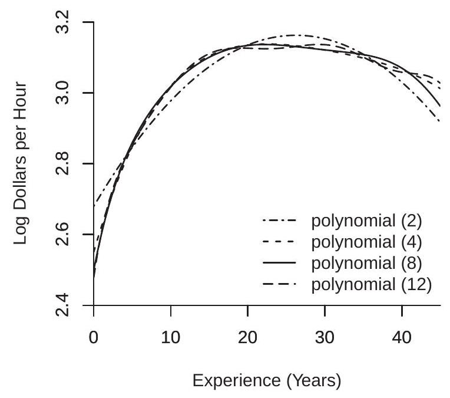
- White Women
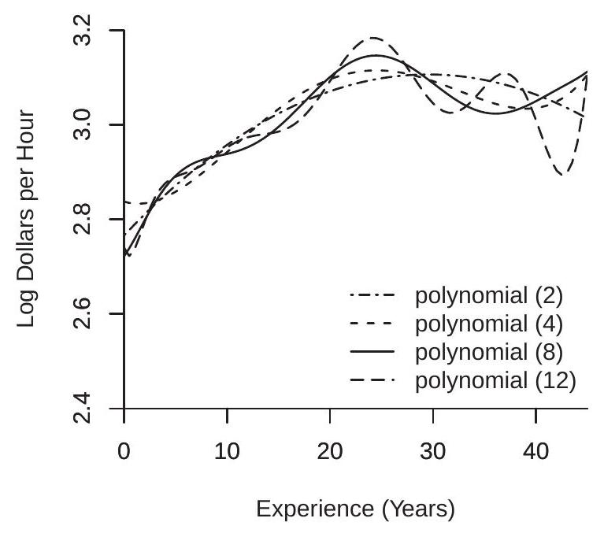
- Black Women
Figure 20.1: Polynomial Estimates of Experience Profile
19.4 Orthogonal Polynomials
Standard implementation of the least squares estimator (20.5) of a polynomial regression may return a computational error message when \(p\) is large. (See Section 3.24.) This is because the moments of \(X^{j}\) can be highly heterogeneous across \(j\) and because the variables \(X^{j}\) can be highly correlated. These two factors imply in practice that the matrix \(\boldsymbol{X}_{K}^{\prime} \boldsymbol{X}_{K}\) can be ill-conditioned (the ratio of the largest to smallest eigenvalue can be quite large) and some packages will return error messages rather than compute \(\widehat{\beta}_{K}\).
In most cases the condition of \(\boldsymbol{X}_{K}^{\prime} \boldsymbol{X}_{K}\) can be dramatically improved by rescaling the observations. As discussed in Section \(3.24\) a simple method for non-negative regressors is to rescale each by its sample mean, e.g. replace \(X_{i}^{j}\) with \(X_{i}^{j} /\left(n^{-1} \sum_{i=1}^{n} X_{i}^{j}\right)\). Even better conditioning can often be obtained by rescaling \(X_{i}\) to lie in \([-1,1]\) before applying powers. In most applications one of these methods will be sufficient for a well-conditioned regression.
A computationally more robust implementation can be obtained by using orthogonal polynomials. These are linear combinations of the polynomial basis functions and produce identical regression estimators (20.6). The goal of orthogonal polynomials is to produce regressors which are either orthogonal or close to orthogonal and have similar variances so that \(\boldsymbol{X}_{K}^{\prime} \boldsymbol{X}_{K}\) is close to diagonal with similar diagonal elements. These orthogonalized regressors \(X_{K}^{*}=\boldsymbol{A}_{K} X_{K}\) can be written as linear combinations of the original variables \(X_{K}\). If the regressors are orthogonalized then the regression estimator (20.6) is modified by replacing \(X_{K}(x)\) with \(X_{K}^{*}(x)=\boldsymbol{A}_{K} X_{K}(x)\).
One approach is to use sample orthogonalization. This is done by a sequence of regressions of \(X_{i}^{j}\) on the previously orthogonalized variables and then rescaling. This will result in perfectly orthogonalized variables. This is what is implemented in many statistical packages under the label “orthogonal polynomials”, for example, the function poly in R. If this is done then the least squares coefficients have no meaning outside this specific sample and it is not convenient for calculation of \(\widehat{m}_{K}(x)\) for values of \(x\) other than sample values. This is the approach used for the examples presented in the previous section.
Another approach is to use an algebraic orthogonal polynomial. This is a polynomial which is orthogonal with respect to a known weight function \(w(x)\). Specifically, it is a sequence \(p_{j}(x), j=0,1,2, \ldots\), with the property that \(\int p_{j}(x) p_{\ell}(x) w(x) d x=0\) for \(j \neq \ell\). This means that if \(w(x)=f(x)\), the marginal density of \(X\), then the basis transformations \(p_{j}(X)\) will be mutually orthogonal (in expectation). Since we do now know the density of \(X\) this is not feasible in practice, but if \(w(x)\) is close to the density of \(X\) then we can expect that the basis transformations will be close to mutually orthogonal. To implement an algebraic orthogonal polynomial you first should rescale your \(X\) variable so that it satisfies the support for the weight function \(w(x)\).
The following three choices are most relevant for economic applications.
Legendre Polynomial. These are orthogonal with respect to the uniform density on \([-1,1]\). (So should be applied to regressors scaled to have support in \([-1,1]\).)
\[ p_{j}(x)=\frac{1}{2^{j}} \sum_{\ell=0}^{j}\left(\begin{array}{l} j \\ \ell \end{array}\right)^{2}(x-1)^{j-\ell}(x+1)^{\ell} . \]
For example, the first four are \(p_{0}(x)=1, p_{1}(x)=x, p_{2}(x)=\left(3 x^{2}-1\right) / 2\), and \(p_{3}(x)=\left(5 x^{3}-3 x\right) / 2\). The best computational method is the recurrence relationship
\[ p_{j+1}(x)=\frac{(2 j+1) x p_{j}(x)-j p_{j-1}(x)}{j+1} . \]
Laguerre Polynomial. These are orthogonal with respect to the exponential density \(e^{-x}\) on \([0, \infty)\). (So should be applied to non-negative regressors scaled if possible to have approximately unit mean and/or variance.)
\[ p_{j}(x)=\sum_{\ell=0}^{j}\left(\begin{array}{l} j \\ \ell \end{array}\right) \frac{(-x)^{\ell}}{\ell !} . \]
For example, the first four are \(p_{0}(x)=1, p_{1}(x)=1-x, p_{2}(x)=\left(x^{2}-4 x+2\right) / 2\), and \(p_{3}(x)=\left(-x^{3}+9 x^{2}-18 x+6\right) / 6\). The best computational method is the recurrence relationship
\[ p_{j+1}(x)=\frac{(2 j+1-x) p_{j}(x)-j p_{j-1}(x)}{j+1} . \]
Hermite Polynomial. These are orthogonal with respect to the standard normal density on \((-\infty, \infty)\). (So should be applied to regressors scaled to have mean zero and variance one.)
\[ p_{j}(x)=j ! \sum_{\ell=0}^{\lfloor j / 2\rfloor} \frac{(-1 / 2)^{\ell} x^{\ell-2 j}}{\ell !(j-2 \ell !)} . \]
For example, the first four are \(p_{0}(x)=1, p_{1}(x)=x, p_{2}(x)=x^{2}-1\), and \(p_{3}(x)=x^{3}-3 x\). The best computational method is the recurrence relationship
\[ p_{j+1}(x)=x p_{j}(x)-j p_{j-1}(x) . \]
The R package orthopolynom provides a convenient set of commands to compute many orthogonal polynomials including the above.
19.5 Splines
A spline is a piecewise polynomial. Typically the order of the polynomial is pre-selected to be linear, quadratic, or cubic. The flexibility of the model is determined by the number of polynomial segments. The join points between the segments are called knots.
To impose smoothness and parsimony it is common to constrain the spline function to have continuous derivatives up to the order of the spline. Thus a linear spline is constrained to be continuous, a quadratic spline is constrained to have a continuous first derivative, and a cubic spline is constrained to have continuous first and second derivatives.
A simple way to construct a regression spline is as follows. A linear spline with one knot \(\tau\) is
\[ m_{K}(x)=\beta_{0}+\beta_{1} x+\beta_{2}(x-\tau) \mathbb{1}\{x \geq \tau\} . \]
To see that this is a linear spline, observe that for \(x \leq \tau\) the function \(m_{K}(x)=\beta_{0}+\beta_{1} x\) is linear with slope \(\beta_{1}\); for \(x \geq \tau\) the function \(m_{K}(x)\) is linear with slope \(\beta_{1}+\beta_{2}\); and the function is continuous at \(x=\tau\). Note that \(\beta_{2}\) is the change in the slope at \(\tau\). A linear spline with two knots \(\tau_{1}<\tau_{2}\) is
\[ m_{K}(x)=\beta_{0}+\beta_{1} x+\beta_{2}\left(x-\tau_{1}\right) \mathbb{1}\left\{x \geq \tau_{2}\right\}+\beta_{3}\left(x-\tau_{2}\right) \mathbb{1}\left\{x \geq \tau_{2}\right\} . \]
A quadratic spline with one knot is
\[ m_{K}(x)=\beta_{0}+\beta_{1} x+\beta_{2} x^{2}+\beta_{3}(x-\tau)^{2} \mathbb{1}\{x \geq \tau\} . \]
To see that this is a quadratic spline, observe that for \(x \leq \tau\) the function is the quadratic \(\beta_{0}+\beta_{1} x+\beta_{2} x^{2}\) with second derivative \(m_{K}^{\prime \prime}(\tau)=2 \beta_{2}\); for \(x \geq \tau\) the second derivative is \(m_{K}^{\prime \prime}(\tau)=2\left(\beta_{2}+\beta_{3}\right)\); so \(2 \beta_{3}\) is the change in the second derivative at \(\tau\). The first derivative at \(x=\tau\) is the continuous function \(m_{K}^{\prime}(\tau)=\) \(\beta_{1}+2 \beta_{2} \tau\).
In general, a \(p^{t h}\)-order spline with \(N\) knots \(\tau_{1}<\tau_{2}<\cdots<\tau_{N}\) is
\[ m_{K}(x)=\sum_{j=0}^{p} \beta_{j} x^{j}+\sum_{k=1}^{N} \beta_{p+k}\left(x-\tau_{k}\right)^{p} \mathbb{1}\left\{x \geq \tau_{k}\right\} \]
which has \(K=N+p+1\) coefficients.
The implied spline regression model for the random pair \((Y, X)\) is \((20.2)\) where
\[ X_{K}=X_{K}(X)=\left(\begin{array}{c} 1 \\ X \\ \vdots \\ X^{p} \\ \left(X-\tau_{1}\right)^{p} \mathbb{1}\left\{X \geq \tau_{1}\right\} \\ \vdots \\ \left(X-\tau_{N}\right)^{p} \mathbb{1}\left\{X \geq \tau_{N}\right\} \end{array}\right) . \]
In practice a spline will depend critically on the choice of the knots \(\tau_{k}\). When \(X\) is bounded with an approximately uniform distribution it is common to space the knots evenly so all segments have the same length. When the distribution of \(X\) is not uniform an alternative is to set the knots at the quantiles \(j /(N+1)\) so that the probability mass is equalized across segments. A third alternative is to set the knots at the points where \(m(x)\) has the greatest change in curvature (see Schumaker (2007), Chapter 7). In all cases the set of knots \(\tau_{j}\) can change with \(K\). Therefore a spline is a special case of an approximation of the form
\[ m_{K}(x)=\beta_{1} \tau_{1 K}(x)+\beta_{2} \tau_{2 K}(x)+\cdots+\beta_{K} \tau_{K K}(x) \]
where the basis transformations \(\tau_{j K}(x)\) depend on both \(j\) and \(K\). Many authors call such approximations a sieve rather than a series because the basis transformations change with \(K\). This distinction is not critical to our treatment so for simplicity we refer to splines as series regression models.
19.6 Illustrating Spline Regression
In Section \(20.3\) we illustrated regressions of log(wage) on experience for white and Black women with a college education. Now we consider a similar regression for Black men with a college education, a sub-sample with 394 observations.
We use a quadratic spline with four knots at experience levels of \(10,20,30\), and 40 . This is a regression model with seven coefficients. The estimated regression function is displayed in Figure \(20.2(\mathrm{a})\). An estimated \(6^{\text {th }}\) order polynomial regression is also displayed for comparison (a \(6^{\text {th }}\) order polynomial is an appropriate comparison because it also has seven coefficients).
While the spline is a quadratic over each segment, what you can see is that the first two segments (experience levels between 0-10 and 10-20 years) are essentially linear. Most of the curvature occurs in the third and fourth segments (20-30 and 30-40 years) where the estimated regression function peaks and twists into a negative slope. The estimated regression function is smooth.
A quadratic or cubic spline is useful when it is desired to impose smoothness as in Figure 20.2(a). In contrast, a linear spline is useful when it is desired to allow for sharp changes in slope.
To illustrate we consider the data set CHJ2004 which is a sample of 8684 urban Phillipino households from Cox, B. E. Hansen, and Jimenez (2004). This paper studied the crowding-out impact of a
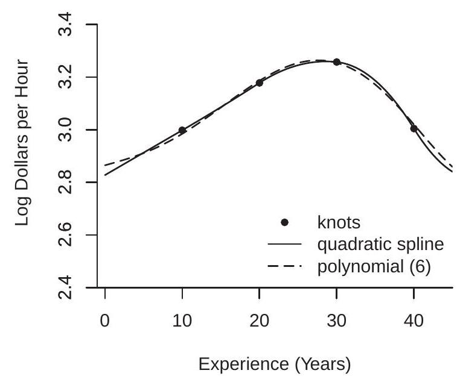
- Experience Profile
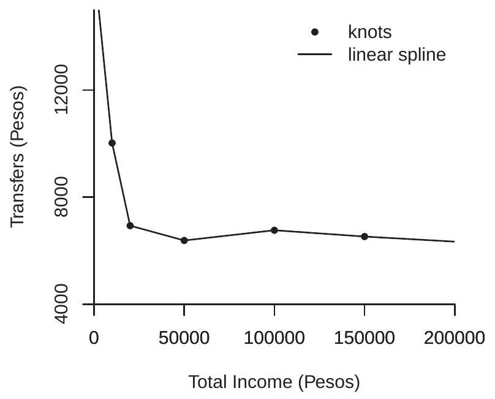
- Effect of Income on Transfers
Figure 20.2: Spline Regression Estimates
family’s income on non-governmental (e.g., extended family) income transfers \({ }^{3}\). A model of altruistic transfers predicts that extended families will make gifts (transfers) when the recipient family’s income is sufficiently low, but will not make transfers if the recipient family’s income exceeds a threshold. A pure altruistic model predicts that the regression of transfers received on family income should have a slope of \(-1\) up to this threshold and be flat above this threshold. We estimated this regression (including the same controls as the authors \({ }^{4}\) ) using a linear spline with knots at 10000, 20000, 50000, 100000, and 150000 pesos. These knots were selected to give flexibility for low income levels where there are more observations. This model has a total of 22 coefficients.
The estimated regression function (as a function of household income) is displayed in Figure \(20.2\) (b). For the first two segments (incomes levels below 20000 pesos) the regression function is negatively sloped as predicted with a slope about \(-0.7\) from 0 to 10000 pesos, and \(-0.3\) from 10000 to 20000 pesos. The estimated regression function is effectively flat for income levels above 20000 pesos. This shape is consistent with the pure altruism model. A linear spline model is particularly well suited for this application as it allows for discontinuous changes in slope.
Linear spline models with a single knot have been recently popularized by Card, Lee, Pei, and Weber (2015) with the label regression kink design.
19.7 The Global/Local Nature of Series Regression
Recall from Section \(19.18\) that we described kernel regression as inherently local in nature. The Nadaraya-Watson, Local Linear, and Local Polynomial estimators of the CEF \(m(x)\) are weighted averages of \(Y_{i}\) for observations for which \(X_{i}\) is close to \(x\).
\({ }^{3}\) Defined as the sum of transfers received domestically, from abroad, and in-kind, less gifts.
\({ }^{4}\) The controls are: age of household head, education (5 dummy categories), married, female, married female, number of children (3 dummies), size of household, employment status (2 dummies). In contrast, series regression is typically described as global in nature. The estimator \(\widehat{m}_{K}(x)=X_{K}(x)^{\prime} \widehat{\beta}_{K}\) is a function of the entire sample. The coefficients of a fitted polynomial (or spline) are affected by the global shape of the function \(m(x)\) and thus affect the estimator \(\widehat{m}_{K}(x)\) at any point \(x\).
While this description has some merit it is not a complete description. As we now show, series regression estimators share the local smoothing property of kernel regression. As the number of series terms \(K\) increase a series estimator \(\widehat{m}_{K}(x)=X_{K}(x)^{\prime} \widehat{\beta}_{K}\) also becomes a local weighted average estimator.
To see this, observe that we can write the estimator as
\[ \begin{aligned} \widehat{m}_{K}(x) &=X_{K}(x)^{\prime}\left(\boldsymbol{X}_{K}^{\prime} \boldsymbol{X}_{K}\right)^{-1}\left(\boldsymbol{X}_{K}^{\prime} \boldsymbol{Y}\right) \\ &=\frac{1}{n} \sum_{i=1}^{n} X_{K}(x)^{\prime} \widehat{\boldsymbol{Q}}_{K}^{-1} X_{K}\left(X_{i}\right) Y_{i} \\ &=\frac{1}{n} \sum_{i=1}^{n} \widehat{w}_{K}\left(x, X_{i}\right) Y_{i} \end{aligned} \]
where \(\widehat{\boldsymbol{Q}}_{K}=n^{-1} \boldsymbol{X}_{K}^{\prime} \boldsymbol{X}_{K}\) and \(\widehat{w}_{K}(x, u)=x_{K}(x)^{\prime} \widehat{\boldsymbol{Q}}_{K}^{-1} x_{K}(u)\). Thus \(\widehat{m}_{K}(x)\) is a weighted average of \(Y_{i}\) using the weights \(\widehat{w}_{K}\left(x, X_{i}\right)\). The weight function \(\widehat{w}_{K}\left(x, X_{i}\right)\) appears to be maximized at \(X_{i}=x\), so \(\widehat{m}(x)\) puts more weight on observations for which \(X_{i}\) is close to \(x\), similarly to kernel regression.
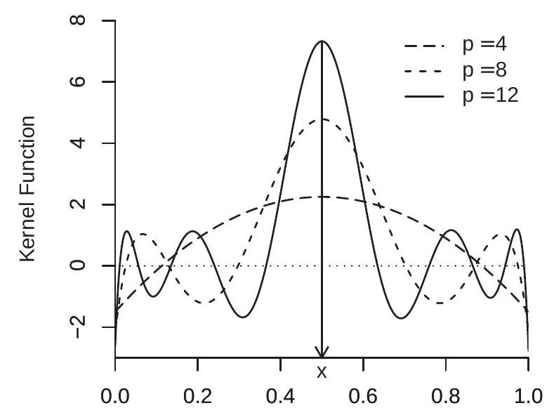
- \(x=0.5\)
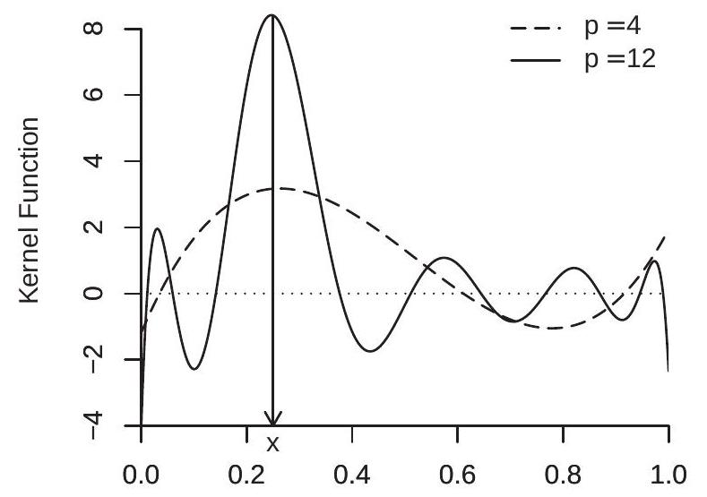
- \(x=0.25\)
Figure 20.3: Kernel Representation of Polynomial Weight Function
To see this more precisely, observe that because \(\widehat{\boldsymbol{Q}}_{K}\) will be close in large samples to \(\boldsymbol{Q}_{K}=\mathbb{E}\left[X_{K} X_{K}^{\prime}\right]\), \(\widehat{w}_{K}(x, u)\) will be close to the deterministic weight function
\[ w_{K}(x, u)=X_{K}(x)^{\prime} \boldsymbol{Q}_{K}^{-1} X_{K}(u) . \]
Take the case \(X \sim U[0,1]\). In Figure \(20.3\) we plot the weight function \(w_{K}(x, u)\) as a funtion of \(u\) for \(x=\) \(0.5\) (panel (a)) and \(x=0.25\) (panel (b)) for \(p=4,8,12\) in panel (a) and \(p=4\), 12 in panel (b). First, examine panel (a). Here you can see that the weight function \(w(x, u)\) is symmetric in \(u\) about \(x\). For \(p=4\) the weight function appears similar to a quadratic in \(u\), and as \(p\) increases the weight function concentrates its main weight around \(x\). However, the weight function is not non-negative. It is quite similar in shape to what are known as higher-order (or bias-reducing) kernels, which were not reviewed in the previous chapter but are part of the kernel estimation toolkit. Second, examine panel (b). Again the weight function is maximized at \(x\), but now it is asymmetric in \(u\) about the point \(x\). Still, the general features from panel (a) carry over to panel (b). Namely, as \(p\) increases the polynomial estimator puts most weight on observations for which \(X\) is close to \(x\) (just as for kernel regression), but is different from conventional kernel regression in that the weight function is not non-negative. Qualitatively similar plots are obtained for spline regression.
There is little formal theory (of which I am aware) which makes a formal link between series regression and kernel regression so the comments presented here are illustrative \({ }^{5}\). However, the point is that statements of the form “Series regession is a global method; Kernel regression is a local method” may not be complete. Both are global in nature when \(h\) is large (kernels) or \(K\) is small (series), and are local in nature when \(h\) is small (kernels) or \(K\) is large (series).
19.8 Stone-Weierstrass and Jackson Approximation Theory
A good series approximation \(m_{K}(x)\) has the property that it gets close to the true CEF \(m(x)\) as the complexity \(K\) increases. Formal statements can be derived from the mathematical theory of the approximation of functions.
An elegant and famous theorem is the Stone-Weierstrass Theorem (Weierstrass, 1885, Stone, 1948) which states that any continuous function can be uniformly well approximated by a polynomial of sufficiently high order. Specifically, the theorem states that if \(m(x)\) is continuous on a compact set \(S\) then for any \(\epsilon>0\) there is some \(K\) sufficiently large such that
\[ \inf _{\beta} \sup _{x \in S}\left|m(x)-X_{K}(x)^{\prime} \beta\right| \leq \epsilon . \]
Thus the true unknown \(m(x)\) can be arbitrarily well approximated by selecting a suitable polynomial.
Jackson (1912) strengthened this result to give convergence rates which depend on the smoothness of \(m(x)\). The basic result has been extended to spline functions. The following notation will be useful. Define the \(\beta\) which minimizes the left-side of (20.7) as
\[ \beta_{K}^{*}=\underset{\beta}{\operatorname{argmin}} \sup _{x \in S}\left|m(x)-X_{K}(x)^{\prime} \beta\right|, \]
define the approximation error
\[ r_{K}^{*}(x)=m(x)-X_{K}(x)^{\prime} \beta_{K}^{*}, \]
and define the minimized value of (20.7)
\[ \delta_{K}^{*} \stackrel{\text { def }}{=} \inf _{\beta} \sup _{x \in S}\left|m(x)-X_{K}(x)^{\prime} \beta\right|=\sup _{x \in S}\left|m(x)-X_{K}(x)^{\prime} \beta_{K}^{*}\right|=\sup _{x \in S}\left|r_{K}^{*}(x)\right| . \]
\({ }^{5}\) Similar connections are made in the appendix of Chen, Liao, and Sun (2012). Theorem 20.1 If for some \(\alpha \geq 0, m^{(\alpha)}(x)\) is uniformly continuous on a compact set \(S\) and \(X_{K}(x)\) is either a polynomial basis or a spline basis (with uniform knot spacing) of order \(s \geq \alpha\), then as \(K \rightarrow \infty\)
\[ \delta_{K}^{*} \leq o\left(K^{-\alpha}\right) . \]
Furthermore, if \(m^{(2)}(x)\) is uniformly continuous on \(S\) and \(X_{K}(x)\) is a linear spline basis, then \(\delta_{K}^{*} \leq O\left(K^{-2}\right)\).
For a proof for the polynomial case see Theorem \(4.3\) of Lorentz (1986) or Theorem \(3.12\) of Schumaker (2007) plus his equations (2.119) and (2.121). For the spline case see Theorem \(6.27\) of Schumaker (2007) plus his equations (2.119) and (2.121). For the linear spline case see Theorem \(6.15\) of Schumaker, equation (6.28).
Theorem \(20.1\) is more useful than the classic Stone-Weierstrass Theorem as it gives an approximation rate which depends on the smoothness order \(\alpha\). The rate \(o\left(K^{-\alpha}\right)\) in (20.11) means that the approximation error (20.10) decreases as \(K\) increases and decreases at a faster rate when \(\alpha\) is large. The standard interpretation is that when \(m(x)\) is smoother it is possible to approximate it with fewer terms.
It will turn out that for our distribution theory it is sufficient to consider the case that \(m^{(2)}(x)\) is uniformly continuous. For this case Theorem \(20.1\) shows that polynomials and quadratic/cubic splines achieve the rate \(o\left(K^{-2}\right)\) and linear splines achieve the rate \(O\left(K^{-2}\right)\). For most of of our results the latter bound will be sufficient.
More generally, Theorem \(20.1\) makes a distinction between polynomials and splines as polynomials achieve the rate \(o\left(K^{-\alpha}\right)\) adaptively (without input from the user) while splines achieve the rate \(o\left(K^{-\alpha}\right)\) only if the spline order \(s\) is appropriately chosen. This is an advantage for polynomials. However, as emphasized by Schumaker (2007), splines simultaneously approximate the derivatives \(m^{(q)}(x)\) for \(q<\) \(\alpha\). Thus, for example, a quadratic spline simultaneously approximates the function \(m(x)\) and its first derivative \(m^{\prime}(x)\). There is no comparable result for polynomials. This is an advantage for quadratic and cubic splines. Since economists are often more interested in marginal effects (derivatives) than in levels this may be a good reason to prefer splines over polynomials.
Theorem \(20.1\) is a bound on the best uniform approximation error. The coefficient \(\beta_{K}^{*}\) which minimizes (20.11) is not, however, the projection coefficient \(\beta_{K}\) as defined in (20.3). Thus Theorem \(20.1\) does not directly inform us concerning the approximation error obtained by series regression. It turns out, however, that the projection error can be easily deduced from (20.11).
Definition 20.1 The projection approximation error is
\[ r_{K}(x)=m(x)-X_{K}(x)^{\prime} \beta_{K} \]
where the coefficient \(\beta_{K}\) is the projection coefficient (20.3). The realized projection approximation error is \(r_{K}=r_{K}(X)\). The expected squared projection error is
\[ \delta_{K}^{2}=\mathbb{E}\left[r_{K}^{2}\right] . \]
The projection approximation error is similar to (20.9) but evaluated using the projection coefficient rather than the minimizing coefficient \(\beta_{K}^{*}\) (20.8). Assuming that \(X\) has compact support \(S\) the expected squared projection error satisfies
\[ \begin{aligned} \delta_{K} &=\left(\int_{S}\left(m(x)-X_{K}(x)^{\prime} \beta_{K}\right)^{2} d F(x)\right)^{1 / 2} \\ & \leq\left(\int_{S}\left(m(x)-X_{K}(x)^{\prime} \beta_{K}^{*}\right)^{2} d F(x)\right)^{1 / 2} \\ & \leq\left(\int_{S} \delta_{K}^{* 2} d F(x)\right)^{1 / 2} \\ &=\delta_{K}^{*} . \end{aligned} \]
The first inequality holds because the projection coefficient \(\beta_{K}\) minimizes the expected squared projection error (see Section 2.25). The second inequality is the definition of \(\delta_{K}^{*}\). Combined with Theorem \(20.1\) we have established the following result.
Theorem \(20.2\) If \(X\) has compact support \(S\), for some \(\alpha \geq 0 m^{(\alpha)}(x)\) is uniformly continuous on \(S\), and \(X_{K}(x)\) is either a polynomial basis or a spline basis of order \(s \geq \alpha\), then as \(K \rightarrow \infty\)
\[ \delta_{K} \leq \delta_{K}^{*} \leq o\left(K^{-\alpha}\right) . \]
Furthermore, if \(m^{(2)}(x)\) is uniformly continuous on \(S\) and \(X_{K}(x)\) is a linear spline basis, then \(\delta_{K} \leq O\left(K^{-2}\right)\).
The available theory of the approximation of functions goes beyond the results described here. For example, there is a theory of weighted polynomial approximation (Mhaskar, 1996) which provides an analog of Theorem \(20.2\) for the unbounded real line when \(X\) has a density with exponential tails.
19.9 Regressor Bounds
The approximation result in Theorem \(20.2\) assumes that the regressors \(X\) have bounded support \(S\). This is conventional in series regression theory as it greatly simplifies the analysis. Bounded support implies that the regressor function \(X_{K}(x)\) is bounded. Define
\[ \begin{gathered} \zeta_{K}(x)=\left(X_{K}(x)^{\prime} \boldsymbol{Q}_{K}^{-1} X_{K}(x)\right)^{1 / 2} \\ \zeta_{K}=\sup _{x} \zeta_{K}(x) \end{gathered} \]
where \(\boldsymbol{Q}_{K}=\mathbb{E}\left[X_{K} X_{K}^{\prime}\right]\) is the population design matrix given the regressors \(X_{K}\). This implies that for all realizations of \(X_{K}\)
\[ \left(X_{K}^{\prime} \boldsymbol{Q}_{K}^{-1} X_{K}\right)^{1 / 2} \leq \zeta_{K} . \]
The constant \(\zeta_{K}(x)\) is the normalized length of the regressor vector \(X_{K}(x)\). The constant \(\zeta_{K}\) is the maximum normalized length. Their values are determined by the basis function transformations and the distribution of \(X\). They are invariant to rescaling \(X_{K}\) or linear rotations.
For polynomials and splines we have explicit expressions for the rate at which \(\zeta_{K}\) grows with \(K\). Theorem 20.3 If \(X\) has compact support \(S\) with a strictly positive density \(f(x)\) on \(S\) then
\(\zeta_{K} \leq O(K)\) for polynomials
\(\zeta_{K} \leq O\left(K^{1 / 2}\right)\) for splines.
For a proof of Theorem \(20.3\) see Newey (1997, Theorem 4).
Furthermore, when \(X\) is uniformly distributed then we can explicitly calculate for polynomials that \(\zeta_{K}=K\), so the polynomial bound \(\zeta_{K} \leq O(K)\) cannot be improved.
To illustrate, we plot in Figure \(20.4\) the values \(\zeta_{K}(x)\) for the case \(X \sim U[0,1]\). We plot \(\zeta_{K}(x)\) for a polynomial of degree \(p=9\) and a quadratic spline with \(N=7\) knots (both satisfy \(K=10\) ). You can see that the values of \(\zeta_{K}(x)\) are close to 3 for both basis transformations and most values of \(x\), but \(\zeta_{K}(x)\) increases sharply for \(x\) near the boundary. The maximum values are \(\zeta_{K}=10\) for the polynomial and \(\zeta_{K}=7.4\) for the quadratic spline. While Theorem \(20.3\) shows the two have different rates for large \(K\), we see for moderate \(K\) that the differences are relatively minor.
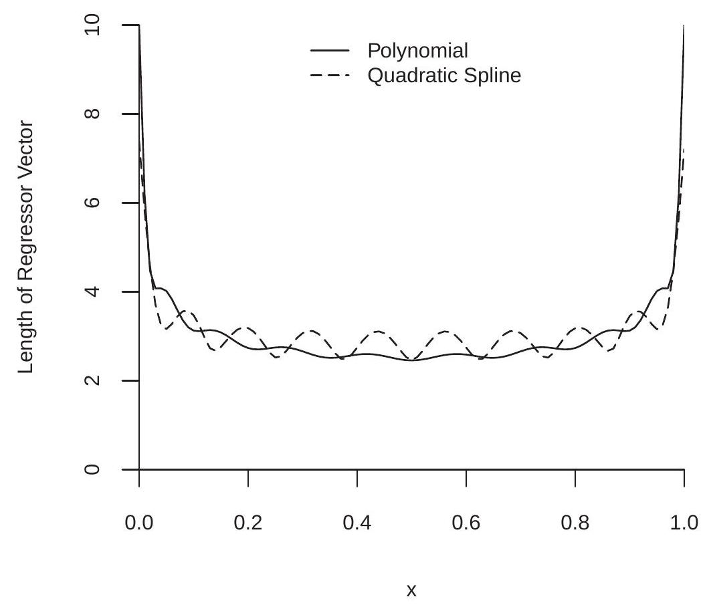
Figure 20.4: Normalized Regressor Length
19.10 Matrix Convergence
One of the challenges which arise when developing a theory for the least squares estimator is how to describe the large-sample behavior of the sample design matrix
\[ \widehat{\boldsymbol{Q}}_{K}=\frac{1}{n} \sum_{i=1}^{n} X_{K i} X_{K i}^{\prime} \]
as \(K \rightarrow \infty\). The difficulty is that its dimension changes with \(K\) so we cannot apply a standard WLLN.
It turns out to be convenient if we first rotate the regressor vector so that the elements are orthogonal in expectation. Thus we define the standardized regressors and design matrix as
\[ \begin{aligned} \widetilde{X}_{K i} &=\boldsymbol{Q}_{K}^{-1 / 2} X_{K i} \\ \widetilde{\boldsymbol{Q}}_{K} &=\frac{1}{n} \sum_{i=1}^{n} \widetilde{X}_{K i} \widetilde{X}_{K i}^{\prime} . \end{aligned} \]
Note that \(\mathbb{E}\left[\widetilde{X}_{K} \widetilde{X}_{K}^{\prime}\right]=\boldsymbol{I}_{K}\). The standardized regressors are not used in practice; they are introduced only to simplify the theoretical derivations.
Our convergence theory will require the following fundamental rate bound on the number of coefficients \(K\).
Assumption $20.1
\(\lambda_{\min }\left(\boldsymbol{Q}_{K}\right) \geq \underline{\lambda}>0\)
\(\zeta_{K}^{2} \log (K) / n \rightarrow 0\) as \(n, K \rightarrow \infty\)
Assumption 20.1.1 ensures that the transformation (20.18) is well defined \({ }^{6}\). Assumption 20.1.2 states that the squared maximum regressor length \(\zeta_{K}^{2}\) grows slower than \(n\). Since \(\zeta_{K}\) increases with \(K\) this is a bound on the rate at which \(K\) can increase with \(n\). By Theorem \(20.2\) the rate in Assumption \(20.1 .2\) holds for polynomials if \(K^{2} \log (K) / n \rightarrow 0\) and for splines if \(K \log (K) / n \rightarrow 0\). In either case, this means that the number of coefficients \(K\) is growing at a rate slower than \(n\).
We are now in a position to describe a convergence result for the standardized design matrix. The following is Lemma \(6.2\) of Belloni, Chernozhukov, Chetverikov, and Kato (2015).
Theorem \(20.4\) If Assumption \(20.1\) holds then
\[ \left\|\widetilde{\boldsymbol{Q}}_{K}-\boldsymbol{I}_{K}\right\| \stackrel{p}{\longrightarrow} 0 . \]
A proof of Theorem \(20.4\) using a stronger condition than Assumption \(20.1\) can be found in Section 20.31. The norm in (20.19) is the spectral norm
\[ \|\boldsymbol{A}\|=\left(\lambda_{\max }\left(\boldsymbol{A}^{\prime} \boldsymbol{A}\right)\right)^{1 / 2} \]
\({ }^{6}\) Technically, what is required is that \(\lambda_{\min }\left(\boldsymbol{B}_{K} \boldsymbol{Q}_{K} \boldsymbol{B}_{K}^{\prime}\right) \geq \underline{\lambda}>0\) for some \(K \times K\) sequence of matrices \(\boldsymbol{B}_{K}\), or equivalently that Assumption 20.1.1 holds after replacing \(X_{K}\) with \(\boldsymbol{B}_{K} X_{K}\). where \(\lambda_{\max }(\boldsymbol{B})\) denotes the largest eigenvalue of the matrix \(\boldsymbol{B}\). For a full description see Section A.23.
For the least squares estimator what is particularly important is the inverse of the sample design matrix. Fortunately we can easily deduce consistency of its inverse from (20.19) when the regressors have been orthogonalized as described.
Theorem 20.5 If Assumption \(20.1\) holds then
\[ \left\|\widetilde{\boldsymbol{Q}}_{K}^{-1}-\boldsymbol{I}_{K}\right\| \stackrel{p}{\longrightarrow} 0 \]
and
\[ \lambda_{\max }\left(\widetilde{\boldsymbol{Q}}_{K}^{-1}\right)=1 / \lambda_{\min }\left(\widetilde{\boldsymbol{Q}}_{K}\right) \stackrel{p}{\longrightarrow} 1 . \]
The proof of Theorem \(20.5\) can be found in Section \(20.31\).
19.11 Consistent Estimation
In this section we give conditions for consistent estimation of \(m(x)\) by the series estimator \(\widehat{m}_{K}(x)=\) \(X_{K}(x)^{\prime} \widehat{\beta}_{K}\).
We know from standard regression theory that for any fixed \(K, \widehat{\beta}_{K} \stackrel{p}{\rightarrow} \beta_{K}\) and thus \(\widehat{m}_{K}(x)=X_{K}(x)^{\prime} \widehat{\beta}_{K} \stackrel{p}{\rightarrow}\) \(X_{K}(x)^{\prime} \beta_{K}\) as \(n \rightarrow \infty\). Furthermore, from the Stone-Weierstrass Theorem we know that \(X_{K}(x)^{\prime} \beta_{K} \rightarrow m(x)\) as \(K \rightarrow \infty\). It therefore seems reasonable to expect that \(\hat{m}_{K}(x) \stackrel{p}{\longrightarrow} m(x)\) as both \(n \rightarrow \infty\) and \(K \rightarrow \infty\) together. Making this argument rigorous, however, is technically challenging, in part because the dimensions of \(\widehat{\beta}_{K}\) and its components are changing with \(K\).
Since \(\widehat{m}_{K}(x)\) and \(m(x)\) are functions, convergence should be defined with respect to an appropriate metric. For kernel regression we focused on pointwise convergence (for each value of \(x\) separately) as that is the simplest to analyze. For series regression it turns out to be simplest to describe convergence with respect to integrated squared error (ISE). We define the latter as
\[ \operatorname{ISE}(K)=\int\left(\widehat{m}_{K}(x)-m(x)\right)^{2} d F(x) \]
where \(F\) is the marginal distribution of \(X\). ISE \((K)\) is the average squared distance between \(\widehat{m}_{K}(x)\) and \(m(x)\), weighted by the marginal distribution of \(X\). The ISE is random, depends on both sample size \(n\) and model complexity \(K\), and its distribution is determined by the joint distribution of \((Y, X)\). We can establish the following.
Theorem 20.6 Under Assumption \(20.1\) and \(\delta_{K}=o(1)\), then as \(n, K \rightarrow \infty\),
\[ \operatorname{ISE}(K)=o_{p}(1) . \]
The proof of Theorem \(20.6\) can be found in Section \(20.31\).
Theorem \(20.6\) shows that the series estimator \(\hat{m}_{K}(x)\) is consistent in the ISE norm under mild conditions. The assumption \(\delta_{K}=o(1)\) holds for polynomials and splines if \(K \rightarrow \infty\) and \(m(x)\) is uniformly continuous. This result is analogous to Theorem \(19.8\) which showed that kernel regression estimator is consistent if \(m(x)\) is continuous.
19.12 Convergence Rate
We now give a rate of convergence.
Theorem 20.7 Under Assumption \(20.1\) and \(\sigma^{2}(x) \leq \bar{\sigma}^{2}<\infty\), then as \(n, K \rightarrow \infty\),
\[ \operatorname{ISE}(K) \leq O_{p}\left(\delta_{K}^{2}+\frac{K}{n}\right) \]
where \(\delta_{K}^{2}\) is the expected squared prediction error (20.13). Furthermore, if \(m^{\prime \prime}(x)\) is uniformly continuous then for polynomial or spline basis functions
\[ \operatorname{ISE}(K) \leq O_{p}\left(K^{-4}+\frac{K}{n}\right) . \]
The proof of Theorem \(20.7\) can be found in Section 20.31. It is based on Newey (1997).
The bound (20.25) is particularly useful as it gives an explicit rate in terms of \(K\) and \(n\). The result shows that the integrated squared error is bounded in probability by two terms. The first \(K^{-4}\) is the squared bias. The second \(K / n\) is the estimation variance. This is analogous to the AIMSE for kernel regression (19.5). We can see that increasing the number of series terms \(K\) affects the integrated squared error by decreasing the bias but increasing the variance. The fact that the estimation variance is of order \(K / n\) can be intuitively explained by the fact that the regression model is estimating \(K\) coefficients.
For polynomials and quadratic splines the bound (20.25) can be written as \(o_{p}\left(K^{-4}\right)+O_{p}(K / n)\).
We are interested in the sequence \(K\) which minimizes the trade-off in (20.25). By examining the firstorder condition we find that the sequence which minimizes this bound is \(K \sim n^{1 / 5}\). With this choice we obtain the optimal integrated squared error \(\operatorname{ISE}(K) \leq O_{p}\left(n^{-4 / 5}\right)\). This is the same convergence rate as obtained by kernel regression under similar assumptions.
It is interesting to contrast the optimal rate \(K \sim n^{1 / 5}\) for series regression with \(h \sim n^{-1 / 5}\) for kernel regression. Essentially, one can view \(K^{-1}\) in series regression as a “bandwidth” similar to kernel regression, or one can view \(1 / h\) in kernel regression as the effective number of coefficients.
The rate \(K \sim n^{1 / 5}\) means that the optimal \(K\) increases very slowly with the sample size. For example, doubling your sample size implies a \(15 %\) increase in the optimal number of coefficients \(K\). To obtain a doubling in the optimal number of coefficients you need to multiply the sample size by 32.
To illustrate, Figure \(20.5\) displays the ISE rate bounds \(K^{-4}+K / n\) as a function of \(K\) for \(n=10,30,150\). The filled circles mark the ISE-minimizing \(K\), which are \(K=2\), 3, and 4 for the three functions. Notice that the ISE functions are steeply downward sloping for small \(K\) and nearly flat for large \(K\) (when \(n\) is large). This is because the bias term \(K^{-4}\) dominates for small values of \(K\) while the variance term \(K / n\) dominates for large values of \(K\) and the latter flattens as \(n\) increases.
19.13 Asymptotic Normality
Take a parameter \(\theta=a(m)\) which is a real-valued linear function of the regression function. This includes the regression function \(m(x)\) at a given point \(x\), derivatives of \(m(x)\), and integrals over \(m(x)\). Given \(\widehat{m}_{K}(x)=X_{K}(x)^{\prime} \widehat{\beta}_{K}\) as an estimator for \(m(x)\), the estimator for \(\theta\) is \(\widehat{\theta}_{K}=a\left(\widehat{m}_{K}\right)=a_{K}^{\prime} \widehat{\beta}_{K}\) for some \(K \times 1\) vector of constants \(a_{K} \neq 0\). (The relationship \(a\left(\widehat{m}_{K}\right)=a_{K}^{\prime} \widehat{\beta}_{K}\) follows because \(a\) is linear in \(m\) and \(\widehat{m}_{K}\) is linear in \(\widehat{\beta}_{K}\).)
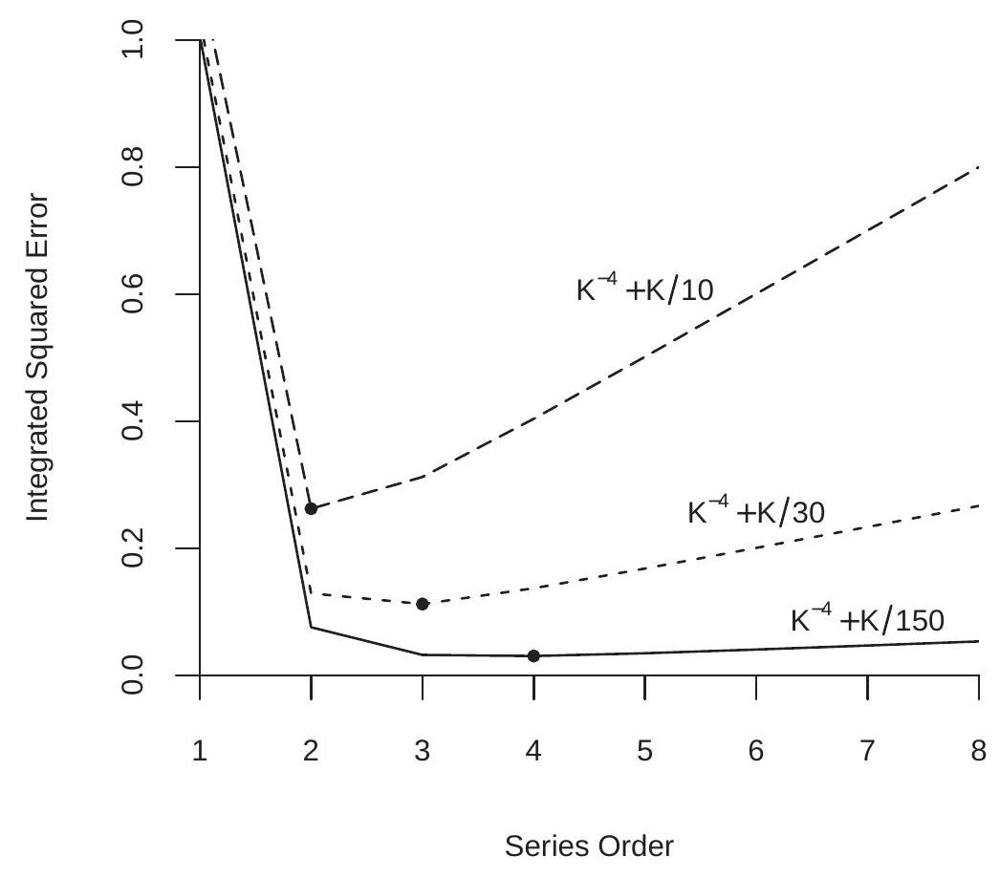
Figure 20.5: Integrated Squared Error
If \(K\) were fixed as \(n \rightarrow \infty\) then by standard asymptotic theory we would expect \(\widehat{\theta}_{K}\) to be asymptotically normal with variance \(V_{K}=a_{K}^{\prime} \boldsymbol{Q}_{K}^{-1} \Omega_{K} \boldsymbol{Q}_{K}^{-1} a_{K}\) where \(\Omega_{K}=\mathbb{E}\left[X_{K} X_{K}^{\prime} e^{2}\right]\). The standard justification, however, is not valid in the nonparametric case. This is in part because \(V_{K}\) may diverge as \(K \rightarrow \infty\), and in part due to the finite sample bias due to the approximation error. Therefore a new theory is required. Interestingly, it turns out that in the nonparametric case \(\widehat{\theta}_{K}\) is still asymptotically normal and \(V_{K}\) is still the appropriate variance for \(\widehat{\theta}_{K}\). The proof is different than the parametric case as the dimensions of the matrices are increasing with \(K\) and we need to be attentive to the estimator’s bias due to the series approximation.
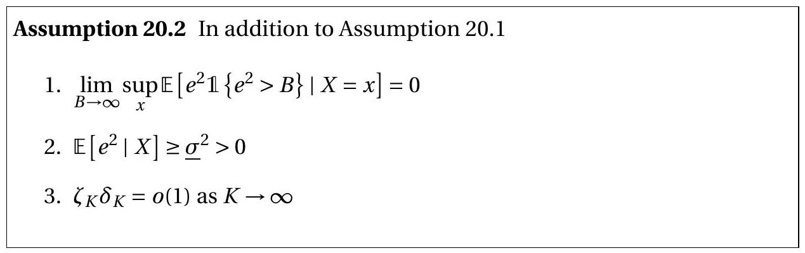
Assumption 20.2.1 is conditional square integrability. It implies that the conditional variance \(\mathbb{E}\left[e^{2} \mid X\right]\) is bounded. It is used to verify the Lindeberg condition for the CLT. Assumption 20.2.2 states that the conditional variance is nowhere degenerate. Thus there is no \(X\) for which \(Y\) is perfectly predictable. This is a technical condition used to bound \(V_{K}\) from below.
Assumption 20.2.3 states that approximation error \(\delta_{K}\) declines faster than the maximal regressor length \(\zeta_{K}\). For polynomials a sufficient condition for this assumption is that \(m^{\prime \prime}(x)\) is uniformly continuous. For splines a sufficient condition is that \(m^{\prime}(x)\) is uniformly continuous.
Theorem 20.8 Under Assumption 20.2, as \(n \rightarrow \infty\),
\[ \frac{\sqrt{n}\left(\widehat{\theta}_{K}-\theta+a\left(r_{K}\right)\right)}{V_{K}^{1 / 2}} \underset{d}{\longrightarrow} \mathrm{N}(0,1) . \]
The proof of Theorem \(20.8\) can be found in Section \(20.31\).
Theorem \(20.8\) shows that the estimator \(\widehat{\theta}_{K}\) is approximately normal with bias \(-a\left(r_{K}\right)\) and variance \(V_{K} / n\). The variance is the same as in the parametric case. The asymptotic bias is similar to that found in kernel regression.
One useful message from Theorem \(20.8\) is that the classical variance formula \(V_{K}\) for \(\widehat{\theta}_{K}\) applies to series regression. This justifies conventional estimators for \(V_{K}\) as will be discussed in Section \(20.18\).
Theorem \(20.8\) shows that the estimator \(\widehat{\theta}_{K}\) has a bias \(a\left(r_{K}\right)\). What is this? It is the same transformation of the function \(r_{K}(x)\) as \(\theta=a(m)\) is of the regression function \(m(x)\). For example, if \(\theta=m(x)\) is the regression at a fixed point \(x\) then \(a\left(r_{K}\right)=r_{K}(x)\), the approximation error at the same point. If \(\theta=m^{\prime}(x)\) is the regression derivative then \(a\left(r_{K}\right)=r_{K}^{\prime}(x)\) is the derivative of the approximation error.
This means that the bias in the estimator \(\widehat{\theta}_{K}\) for \(\theta\) shown in Theorem \(20.8\) is simply the approximation error transformed by the functional of interest. If we are estimating the regression function then the bias is the error in approximating the regression function; if we are estimating the regression derivative then the bias is the error in the derivative in the approximation error for the regression function.
19.14 Regression Estimation
A special yet important example of a linear estimator is the regression function at a fixed point \(x\). In the notation of the previous section, \(a(m)=m(x)\) and \(a_{K}=X_{K}(x)\). The series estimator of \(m(x)\) is \(\widehat{\theta}_{K}=\widehat{m}_{K}(x)=X_{K}(x)^{\prime} \widehat{\beta}_{K}\). As this is a key problem of interest we restate the asymptotic result of Theorem \(20.8\) for this estimator.
Theorem 20.9 Under Assumption 20.2, as \(n \rightarrow \infty\),
\[ \frac{\sqrt{n}\left(\hat{m}_{K}(x)-m(x)+r_{K}(x)\right)}{V_{K}^{1 / 2}(x)} \underset{d}{\longrightarrow} \mathrm{N}(0,1) \]
where \(V_{K}(x)=X_{K}(x)^{\prime} \boldsymbol{Q}_{K}^{-1} \Omega_{K} \boldsymbol{Q}_{K}^{-1} X_{K}(x)\).
There are several important features about the asymptotic distribution (20.27).
First, as mentioned in the previous section it shows that the classical variance formula \(V_{K}(x)\) applies for the series estimator \(\widehat{m}_{K}(x)\). Second, (20.27) shows that the estimator has the asymptotic bias \(r_{K}(x)\). This is due to the fact that the finite order series is an approximation to the unknown regression function \(m(x)\) and this results in finite sample bias.
There is another fascinating connection between the asymptotic variance of Theorem \(20.9\) and the regression lengths \(\zeta_{K}(x)\) of (20.15). Under conditional homoskedasticity we have the simplification \(V_{K}(x)=\sigma^{2} \zeta_{K}(x)^{2}\). Thus the asymptotic variance of the regression estimator is proportional to the squared regression lengths. From Figure \(20.4\) we learned that the regression length \(\zeta_{K}(x)\) is much higher at the edge of the support of the regressors, especially for polynomials. This means that the precision of the series regression estimator is considerably degraded at the edge of the support.
19.15 Undersmoothing
An unpleasant aspect about Theorem \(20.9\) is the bias term. An interesting trick is that this bias term can be made asymptotically negligible if we assume that \(K\) increases with \(n\) at a sufficiently fast rate.
Theorem 20.10 Under Assumption 20.2, if in addition \(n \delta_{K}^{* 2} \rightarrow 0\) then
\[ \frac{\sqrt{n}\left(\widehat{m}_{K}(x)-m(x)\right)}{V_{K}^{1 / 2}(x)} \underset{d}{\longrightarrow} \mathrm{N}(0,1) \text {. } \]
The condition \(n \delta_{K}^{* 2} \rightarrow 0\) implies that the squared bias converges faster than the estimation variance so the former is asymptotically negligible. If \(m^{\prime \prime}(x)\) is uniformly continuous then a sufficient condition for polynomials and quadratic splines is \(K \sim n^{1 / 4}\). For linear splines a sufficient condition is for \(K\) to diverge faster than \(K^{1 / 4}\). The rate \(K \sim n^{1 / 4}\) is somewhat faster than the ISE-optimal rate \(K \sim n^{1 / 5}\).
The assumption \(n \delta_{K}^{* 2} \rightarrow 0\) is often stated by authors as an innocuous technical condition. This is misleading as it is a technical trick and should be discussed explicitly. The reason why the assumption eliminates the bias from (20.28) is that the assumption forces the estimation variance to dominate the squared bias so that the latter can be ignored. This means that the estimator itself is inefficient.
Because \(n \delta_{K}^{* 2} \rightarrow 0\) means that \(K\) is larger than optimal we say that \(\widehat{m}_{K}(x)\) is undersmoothed relative to the optimal series estimator.
Many authors like to focus their asymptotic theory on the assumptions in Theorem \(20.10\) as the distribution (20.28) appears cleaner. However, it is a poor use of asymptotic theory. There are three problems with the assumption \(n \delta_{K}^{* 2} \rightarrow 0\) and the approximation (20.28). First, the estimator \(\widehat{m}_{K}(x)\) is inefficient. Second, while the assumption \(n \delta_{K}^{* 2} \rightarrow 0\) makes the bias of lower order than the variance it only makes the bias of slightly lower order, meaning that the accuracy of the asymptotic approximation is poor. Effectively, the estimator is still biased in finite samples. Third, \(n \delta_{K}^{* 2} \rightarrow 0\) is an assumption not a rule for empirical practice. It is unclear what the statement “Assume \(n \delta_{K}^{* 2} \rightarrow 0\)” means in a practical application. From this viewpoint the difference between (20.26) and (20.28) is in the assumptions not in the actual reality nor in the actual empirical practice. Eliminating a nuisance (the asymptotic bias) through an assumption is a trick not a substantive use of theory. My strong view is that the result (20.26) is more informative than (20.28). It shows that the asymptotic distribution is normal but has a non-trivial finite sample bias.
19.16 Residuals and Regression Fit
The fitted regression at \(x=X_{i}\) is \(\widehat{m}_{K}\left(X_{i}\right)=X_{K i}^{\prime} \widehat{\beta}_{K}\) and the fitted residual is \(\widehat{e}_{K i}=Y_{i}-\widehat{m}_{K}\left(X_{i}\right)\). The leave-one-out prediction errors are
\[ \widetilde{e}_{K i}=Y_{i}-\widehat{m}_{K,-i}\left(X_{i}\right)=Y_{i}-X_{K i}^{\prime} \widehat{\beta}_{K,-i} \]
where \(\widehat{\beta}_{K,-i}\) is the least squares coefficient with the \(i^{t h}\) observation omitted. Using (3.44) we have the simple computational formula
\[ \widetilde{e}_{K i}=\widehat{e}_{K i}\left(1-X_{K i}^{\prime}\left(\boldsymbol{X}_{K}^{\prime} \boldsymbol{X}_{K}\right)^{-1} X_{K i}\right)^{-1} . \]
As for kernel regression the prediction errors \(\widetilde{e}_{K i}\) are better estimators of the errors than the fitted residuals \(\widehat{e}_{K i}\) as the former do not have the tendency to over-fit when the number of series terms is large.
19.17 Cross-Validation Model Selection
A common method for selection of the number of series terms \(K\) is cross-validation. The crossvalidation criterion is the \(\operatorname{sum}^{7}\) of squared prediction errors
\[ \operatorname{CV}(K)=\sum_{i=1}^{n} \widetilde{e}_{K i}^{2}=\sum_{i=1}^{n} \widehat{e}_{K i}^{2}\left(1-X_{K i}^{\prime}\left(\boldsymbol{X}_{K}^{\prime} \boldsymbol{X}_{K}\right)^{-1} X_{K i}\right)^{-2} . \]
The CV-selected value of \(K\) is the integer which minimizes \(\mathrm{CV}(K)\).
As shown in Theorem \(19.7 \mathrm{CV}(K)\) is an approximately unbiased estimator of the integrated meansquared error (IMSE), which is the expected integrated squared error (ISE). The proof of the result is the same for all nonparametric estimators (series as well as kernels) so does not need to be repeated here. Therefore, finding the \(K\) which produces the smallest value of \(\mathrm{CV}(K)\) is a good indicator that the estimator \(\widehat{m}_{K}(x)\) has small IMSE.
For practical implementation we first designate a set of models (sets of basis transformations and number of variables \(K\) ) over which to search. (For example, polynomials of order 1 through \(K_{\max }\) for some pre-selected \(K_{\max }\).) For each, there is a set of regressors \(X_{K}\) which are obtained by transformations of the original variables \(X\). For each set we estimate the regression by least squares, calculate the leaveone-out prediction errors, and the CV criterion. Since the errors are a linear operation this is a simple calculation. The CV-selected \(K\) is the integer which produces the smallest value of \(\mathrm{CV}(K)\). \(\operatorname{Plots}\) of \(\mathrm{CV}(K)\) against \(K\) can aid assessment and interpretation. Since the model order \(K\) is an integer the CV criterion for series regression is a discrete function, unlike the case of kernel regression.
If it is desired to produce an estimator \(\widehat{m}_{K}(x)\) with reduced bias it may be preferred to select a value of \(K\) slightly higher than that selected by CV alone.
To illustrate, in Figure \(20.6\) we plot the cross-validation functions for the polynomial regression estimates from Figure 20.1. The lowest point marks the polynomial order which minimizes the crossvalidation function. In panel (a) we plot the CV function for the sub-sample of white women. Here we see that the CV-selected order is \(p=3\), a cubic polynomial. In panel (b) we plot the CV function for the sub-sample of Black women, and find that the CV-selected order is \(p=2\), a quadratic. As expected from visual examination of Figure 20.1, the selected model is more parsimonious for panel (b), most likely because it has a substantially smaller sample size. What may be surprising is that even for panel (a), which has a large sample and smooth estimates, the CV-selected model is still relatively parsimonious.
A user who desires a reduced bias estimator might increase the polynomial orders to \(p=4\) or even \(p=5\) for the subsample of white women and to \(p=3\) or \(p=4\) for the subsample of Black women. Both CV functions are relatively similar across these values.
\({ }^{7}\) Some authors define \(\mathrm{CV}(K)\) as the average rather than the sum.
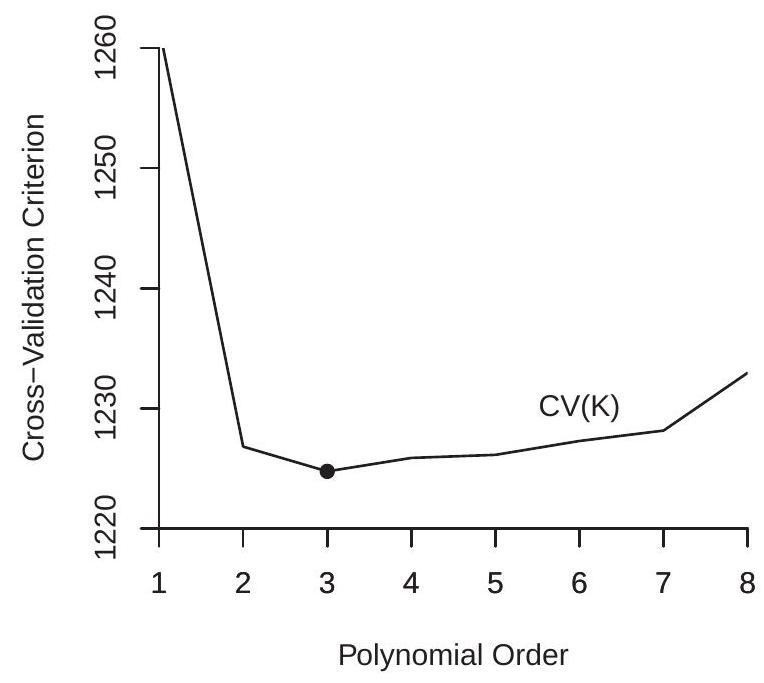
- White Women
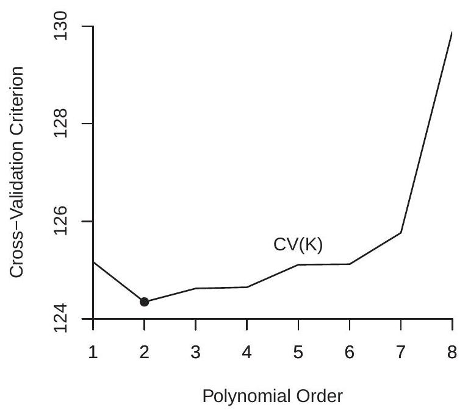
- Black Women
Figure 20.6: Cross-Validation Functions for Polynomial Estimates of Experience Profile
19.18 Variance and Standard Error Estimation
The exact conditional variance of the least squares estimator \(\widehat{\beta}_{K}\) under independent sampling is
\[ \boldsymbol{V}_{\widehat{\beta}}=\left(\boldsymbol{X}_{K}^{\prime} \boldsymbol{X}_{K}\right)^{-1}\left(\sum_{i=1}^{n} X_{K i} X_{K i}^{\prime} \sigma^{2}\left(X_{i}\right)\right)\left(\boldsymbol{X}_{K}^{\prime} \boldsymbol{X}_{K}\right)^{-1} . \]
The exact conditional variance for the conditional mean estimator \(\widehat{m}_{K}(x)=X_{K}(x)^{\prime} \widehat{\beta}_{K}\) is
\[ V_{K}(x)=X_{K}(x)^{\prime}\left(\boldsymbol{X}_{K}^{\prime} \boldsymbol{X}_{K}\right)^{-1}\left(\sum_{i=1}^{n} X_{K i} X_{K i}^{\prime} \sigma^{2}\left(X_{i}\right)\right)\left(\boldsymbol{X}_{K}^{\prime} \boldsymbol{X}_{K}\right)^{-1} X_{K}(x) . \]
Using the notation of Section \(20.7\) this equals
\[ \frac{1}{n^{2}} \sum_{i=1}^{n} \widehat{w}_{K}\left(x, X_{i}\right)^{2} \sigma^{2}\left(X_{i}\right) . \]
In the case of conditional homoskedasticity the latter simplifies to
\[ \frac{1}{n} \widehat{w}_{K}(x, x) \sigma^{2} \simeq \frac{1}{n} \zeta_{K}(x)^{2} \sigma^{2} . \]
where \(\zeta_{K}(x)\) is the normalized regressor length defined in (20.15). Under conditional heteroskedasticty, large samples, and \(K\) large (so that \(\widehat{w}_{K}\left(x, X_{i}\right)\) is a local kernel) it approximately equals
\[ \frac{1}{n} w_{K}(x, x) \sigma^{2}(x)=\frac{1}{n} \zeta_{K}(x)^{2} \sigma^{2}(x) . \]
In either case we find that the variance is approximately
\[ V_{K}(x) \simeq \frac{1}{n} \zeta_{K}(x)^{2} \sigma^{2}(x) . \]
This shows that the variance of the series regression estimator is a scale of \(\zeta_{K}(x)^{2}\) and the conditional variance. From the plot of \(\zeta_{K}(x)\) shown in Figure \(20.4\) we can deduce that the series regression estimator will be relatively imprecise at the boundary of the support of \(X\).
The estimator of (20.31) recommended by Andrews (1991a) is the HC3 estimator
\[ \widehat{\boldsymbol{V}}_{\widehat{\beta}}=\left(\boldsymbol{X}_{K}^{\prime} \boldsymbol{X}_{K}\right)^{-1}\left(\sum_{i=1}^{n} X_{K i} X_{K i}^{\prime} \widetilde{e}_{K i}^{2}\right)\left(\boldsymbol{X}_{K}^{\prime} \boldsymbol{X}_{K}\right)^{-1} \]
where \(\widetilde{e}_{K i}\) is the leave-one-out prediction error (20.29). Alternatives include the HC1 or HC2 estimators.
Given (20.32) a variance estimator for \(\widehat{m}_{K}(x)=X_{K}(x)^{\prime} \widehat{\beta}_{K}\) is
\[ \widehat{V}_{K}(x)=X_{K}(x)^{\prime}\left(\boldsymbol{X}_{K}^{\prime} \boldsymbol{X}_{K}\right)^{-1}\left(\sum_{i=1}^{n} X_{K i} X_{K i}^{\prime} \widetilde{e}_{K i}^{2}\right)\left(\boldsymbol{X}_{K}^{\prime} \boldsymbol{X}_{K}\right)^{-1} X_{K}(x) . \]
A standard error for \(\widehat{m}(x)\) is the square root of \(\widehat{V}_{K}(x)\).
19.19 Clustered Observations
Clustered observations are \(\left(Y_{i g}, X_{i g}\right)\) for individuals \(i=1, \ldots, n_{g}\) in cluster \(g=1, \ldots, G\). The model is
\[ \begin{aligned} Y_{i g} &=m\left(X_{i g}\right)+e_{i g} \\ \mathbb{E}\left[e_{i g} \mid \boldsymbol{X}_{g}\right] &=0 \end{aligned} \]
where \(\boldsymbol{X}_{g}\) is the stacked \(X_{i g}\). Stack \(Y_{i g}\) and \(e_{i g}\) into cluster-level variables \(\boldsymbol{Y}_{g}\) and \(\boldsymbol{e}_{g}\).
The series regression model using cluster-level notation is \(\boldsymbol{Y}_{g}=\boldsymbol{X}_{g} \beta_{K}+\boldsymbol{e}_{K g}\). We can write the series estimator as
\[ \widehat{\beta}_{K}=\left(\sum_{g=1}^{G} \boldsymbol{X}_{g}^{\prime} \boldsymbol{X}_{g}\right)^{-1}\left(\sum_{g=1}^{G} \boldsymbol{X}_{g}^{\prime} \boldsymbol{Y}_{g}\right) . \]
The cluster-level residual vector is \(\widehat{\boldsymbol{e}}_{g}=\boldsymbol{Y}_{g}-\boldsymbol{X}_{g} \widehat{\beta}_{K}\).
As for parametric regression with clustered observations the standard assumption is that the clusters are mutually independent but dependence within each cluster is unstructured. We therefore use the same variance formulae as used for parametric regression. The standard estimator is
\[ \widehat{\boldsymbol{V}}_{\widehat{\beta}}^{\mathrm{CR1}}=\left(\frac{G}{G-1}\right)\left(\boldsymbol{X}_{K}^{\prime} \boldsymbol{X}_{K}\right)^{-1}\left(\sum_{g=1}^{G} \boldsymbol{X}_{g}^{\prime} \widehat{\boldsymbol{e}}_{g} \widehat{\boldsymbol{e}}_{g}^{\prime} \boldsymbol{X}_{g}\right)\left(\boldsymbol{X}_{K}^{\prime} \boldsymbol{X}_{K}\right)^{-1} . \]
An alternative is to use the delete-cluster prediction error \(\widetilde{\boldsymbol{e}}_{g}=\boldsymbol{Y}_{g}-\boldsymbol{X}_{g} \widetilde{\beta}_{K,-g}\) where
\[ \widetilde{\beta}_{K,-g}=\left(\sum_{j \neq g} \boldsymbol{X}_{j}^{\prime} \boldsymbol{X}_{j}\right)^{-1}\left(\sum_{j \neq g} \boldsymbol{X}_{j}^{\prime} \boldsymbol{Y}_{j}\right) \]
leading to the estimator
\[ \widehat{\boldsymbol{V}}_{\widehat{\beta}}^{\mathrm{CR} 3}=\left(\boldsymbol{X}_{K}^{\prime} \boldsymbol{X}_{K}\right)^{-1}\left(\sum_{g=1}^{G} \boldsymbol{X}_{g}^{\prime} \widetilde{\boldsymbol{e}}_{g} \widetilde{\boldsymbol{e}}_{g}^{\prime} \boldsymbol{X}_{g}\right)\left(\boldsymbol{X}_{K}^{\prime} \boldsymbol{X}_{K}\right)^{-1} . \]
There is no current theory on how to select the number of series terms \(K\) for clustered observations. A reasonable choice is to minimize the delete-cluster cross-validation criterion \(\mathrm{CV}(K)=\sum_{g=1}^{G} \widetilde{\boldsymbol{e}}_{g}^{\prime} \widetilde{\boldsymbol{e}}_{g}\).
19.20 Confidence Bands
When displaying nonparametric estimators such as \(\widehat{m}_{K}(x)\) it is customary to display confidence intervals. An asymptotic pointwise \(95 %\) confidence interval for \(m(x)\) is \(\widehat{m}_{K}(x) \pm 1.96 \widehat{V}_{K}^{1 / 2}(x)\). These confidence intervals can be plotted along with \(\widehat{m}_{K}(x)\).
To illustrate, Figure \(20.7\) plots polynomial estimates of the regression of \(\log (\) wage \()\) on experience using the selected estimates from Figure 20.1, plus 95% confidence bands. Panel (a) plots the estimate for the subsample of white women using \(p=5\). Panel (b) plots the estimate for the subsample of Black women using \(p=3\). The standard errors are calculated using the formula (20.33). You can see that the confidence bands widen at the boundaries. The confidence bands are tight for the larger subsample of white women, and significantly wider for the smaller subsample of Black women. Regardless, both plots indicate that the average wage rises for experience levels up to about 20 years and then flattens for experience levels above 20 years.
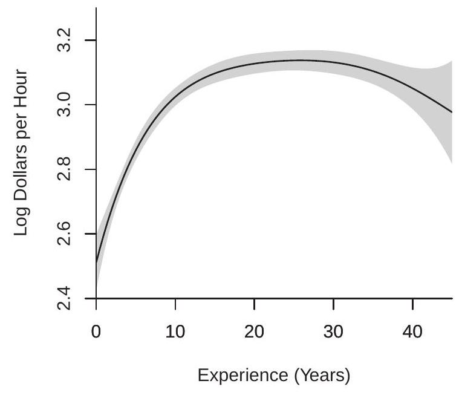
- White Women
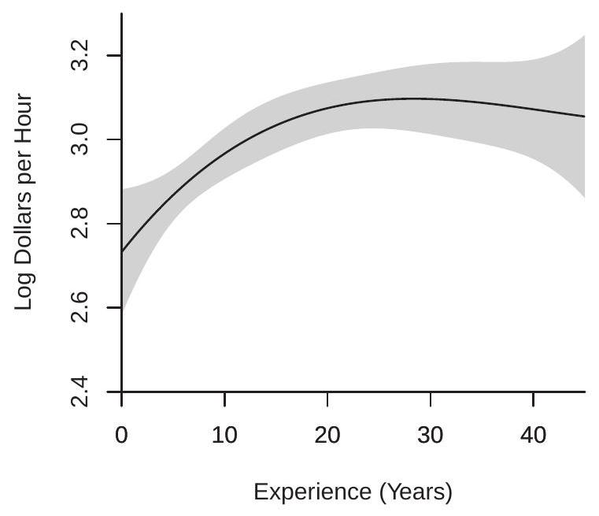
- Black Women
Figure 20.7: Polynomial Estimates with 95% Confidence Bands
There are two deficiencies with these confidence bands. First, they do not take into account the bias \(r_{K}(x)\) of the series estimator. Consequently, we should interpret the confidence bounds as valid for the pseudo-true regression (the best finite \(K\) approximation) rather than the true regression function \(m(x)\). Second, the above confidence intervals are based on a pointwise (in \(x\) ) asymptotic distribution theory. Consequently we should interpret their coverage as having pointwise validity and be cautious about interpreting global shapes from the confidence bands.
19.21 Uniform Approximations
Since \(\widehat{m}_{K}(x)\) is a function it is desirable to have a distribution theory which applies to the entire function, not just the estimator at a point. This can be used, for example, to construct confidence bands with uniform (in \(x\) ) coverage properties. For those familiar with empirical process theory, it might be hoped that the stochastic process
\[ \eta_{K}(x)=\frac{\sqrt{n}\left(\widehat{m}_{K}(x)-m(x)\right)}{V_{K}^{1 / 2}(x)} \]
might converge to a stochastic (Gaussian) process, but this is not the case. Effectively, the process \(\eta_{K}(x)\) is not stochastically equicontinuous so conventional empirical process theory does not apply.
To develop a uniform theory, Belloni, Chernozhukov, Chetverikov, and Kato (2015) have introduced what are known as strong approximations. Their method shows that \(\eta_{K}(x)\) is equal in distribution to a sequence of Gaussian processes plus a negligible error. Their theory (Theorem 4.4) takes the following form. Under stronger conditions than Assumption \(20.2\)
\[ \eta_{K}(x)={ }_{d} \frac{X_{K}(x)^{\prime}\left(\boldsymbol{Q}_{K}^{-1} \Omega_{K} \boldsymbol{Q}_{K}^{-1}\right)^{1 / 2}}{V_{K}^{1 / 2}(x)} G_{K}+o_{p}(1) \]
uniformly in \(x\), where ” \(=d\) ” means “equality in distribution” and \(G_{K} \sim \mathrm{N}\left(0, \boldsymbol{I}_{K}\right)\).
This shows the distributional result in Theorem \(20.10\) can be interpreted as holding uniformly in \(x\). It can also be used to develop confidence bands (different from those from the previous section) with asymptotic uniform coverage.
19.22 Partially Linear Model
A common use of a series regression is to allow \(m(x)\) to be nonparametric with respect to one variable yet linear in the other variables. This allows flexibility in a particular variable of interest. A partially linear model with vector-valued regressor \(X_{1}\) and real-valued continuous \(X_{2}\) takes the form
\[ m\left(x_{1}, x_{2}\right)=x_{1}^{\prime} \beta_{1}+m_{2}\left(x_{2}\right) . \]
This model is common when \(X_{1}\) are discrete (e.g. binary) and \(X_{2}\) is continuously distributed.
Series methods are convenient for partially linear models as we can replace the unknown function \(m_{2}\left(x_{2}\right)\) with a series expansion to obtain
\[ m(X) \simeq m_{K}(X)=X_{1}^{\prime} \beta_{1}+X_{2 K}\left(X_{2}\right)^{\prime} \beta_{2 K}=X_{K}^{\prime} \beta_{K} \]
where \(X_{2 K}=X_{2 K}\left(x_{2}\right)\) are basis transformations of \(x_{2}\) (typically polynomials or splines). After transformation the regressors are \(X_{K}=\left(X_{1}^{\prime}, X_{2 K}^{\prime}\right)\) with coefficients \(\beta_{K}=\left(\beta_{1}^{\prime}, \beta_{2 K}^{\prime}\right)^{\prime}\).
19.23 Panel Fixed Effects
The one-way error components nonparametric regression model is
\[ Y_{i t}=m\left(X_{i t}\right)+u_{i}+\varepsilon_{i t} \]
for \(i=1, \ldots, N\) and \(t=1, \ldots, T\). It is standard to treat the individual effect \(u_{i}\) as a fixed effect. This model can be interpreted as a special case of the partially linear model from the previous section though the dimension of \(u_{i}\) is increasing with \(N\).
A series estimator approximates the function \(m(x)\) with \(m_{K}(x)=X_{K}(x)^{\prime} \beta_{K}\) as in (20.4). This leads to the series regression model \(Y_{i t}=X_{K i t}^{\prime} \beta_{K}+u_{i}+\varepsilon_{K i t}\) where \(X_{K i t}=X_{K}\left(X_{i t}\right)\).
The fixed effects estimator is the same as in linear panel data regression. First, the within transformation is applied to \(Y_{i t}\) and to the elements of the basis transformations \(X_{K i t}\). These are \(\dot{Y}_{i t}=Y_{i t}-\bar{Y}_{i}\) and \(\dot{X}_{K i t}=X_{K i t}-\bar{X}_{K i t}\). The transformed regression equation is \(\dot{Y}_{i t}=\dot{X}_{K i t}^{\prime} \beta_{K}+\dot{\varepsilon}_{K i t}\). What is important about the within transformation for the regressors is that it is applied to the transformed variables \(\dot{X}_{K i t}\) not the original regressor \(X_{i t}\). For example, in a polynomial regression the within transformation is applied to the powers \(X_{i t}^{j}\). It is inappropriate to apply the within transformation to \(X_{i t}\) and then construct the basis transformations.
The coefficient is estimated by least squares on the within transformed variables
\[ \widehat{\beta}_{K}=\left(\sum_{i=1}^{n} \sum_{t=1}^{T} \dot{X}_{K i t} \dot{X}_{K i t}^{\prime}\right)^{-1}\left(\sum_{i=1}^{n} \sum_{t=1}^{T} \dot{X}_{K i t} \dot{Y}_{i t}\right) . \]
Variance estimators should be calculated using the clustered variance formulas, clustered at the level of the individual \(i\), as described in Section 20.19.
For selection of the number of series terms \(K\) there is no current theory. A reasonable method is to use delete-cluster cross-validation as described in Section \(20.19\).
19.24 Multiple Regressors
Suppose \(X \in \mathbb{R}^{d}\) is vector-valued and continuously distributed. A multivariate series approximation can be obtained as follows. Construct a set of basis transformations for each variable separately. Take their tensor cross-products. Use these as regressors. For example, a \(p^{t h}\)-order polynomial is
\[ m_{K}(x)=\beta_{0}+\sum_{j_{1}=1}^{p} \cdots \sum_{j_{d}=1}^{p} x_{1}^{j_{1}} \cdots x_{d}^{j_{d}} \beta_{j_{1}, \ldots, j_{d} K} \]
This includes all powers and cross-products. The coefficient vector has dimension \(K=1+p^{d}\).
The inclusion of cross-products greatly increases the number of coefficients relative to the univariate case. Consequently series applications with multiple regressors typically require large sample sizes.
19.25 Additively Separable Models
As discussed in the previous section, when \(X \in \mathbb{R}^{d}\) a full series expansion requires a large number of coefficients, which means that estimation precision will be low unless the sample size is quite large. A common simplification is to treat the regression function \(m(x)\) as additively separable in the individual regressors. This means that
\[ m(x)=m_{1}\left(x_{1}\right)+m_{2}\left(x_{2}\right)+\cdots+m_{d}\left(x_{d}\right) . \]
We then apply series expansions (polynomials or splines) separately for each component \(m_{j}\left(x_{j}\right)\). Essentially, this is the same as the expansions discussed in the previous section but omitting the interaction terms.
The advantage of additive separability is the reduction in dimensionality. While an unconstrained \(p^{t h}\) order polynomial has \(1+p^{d}\) coefficients, an additively separable polynomial model has only \(1+d p\) coefficients. This is a major reduction.
The disadvantage of additive separability is that the interaction effects have been eliminated. This is a substantive restriction on \(m(x)\).
The decision to impose additive separability can be based on an economic model which suggests the absence of interaction effects, or can be a model selection decision similar to the selection of the number of series terms.
19.26 Nonparametric Instrumental Variables Regression
The basic nonparametric instrumental variables (NPIV) model takes the form
\[ \begin{aligned} Y &=m(X)+e \\ \mathbb{E}[e \mid Z] &=0 \end{aligned} \]
where \(Y, X\), and \(Z\) are real valued. Here, \(Z\) is an instrumental variable and \(X\) an endogenous regressor.
In recent years there have been many papers in the econometrics literature examining the NPIV model, exploring identification, estimation, and inference. Many of these papers are mathematically advanced. Two important and accessible contributions are Newey and Powell (2003) and Horowitz (2011). Here we describe some of the primary results.
A series estimator approximates the function \(m(x)\) with \(m_{K}(x)=X_{K}(x)^{\prime} \beta_{K}\) as in (20.4). This leads to the series structural equation
\[ Y=X_{K}^{\prime} \beta_{K}+e_{K} \]
where \(X_{K}=X_{K}(X)\). For example, if a polynomial basis is used then \(X_{K}=\left(1, X, \ldots, X^{K-1}\right)\).
Since \(X\) is endogenous so is the entire vector \(X_{K}\). Thus we need at least \(K\) instrumental varibles. It is useful to consider the reduced form equation for \(X\). A nonparametric specification is
\[ \begin{aligned} X &=g(Z)+u \\ \mathbb{E}[u \mid Z] &=0 . \end{aligned} \]
We can appropriate \(g(z)\) by the series expansion
\[ g(z) \simeq g_{L}(z)=Z_{L}(z)^{\prime} \gamma_{L} \]
where \(Z_{L}(z)\) is an \(L \times 1\) vector of basis transformations and \(\gamma_{L}\) is an \(L \times 1\) coefficient vector. For example, if a polynomial basis is used then \(Z_{L}(z)=\left(1, z, \ldots, z^{L-1}\right)\). Most of the literature for simplicity focuses on the case \(L=K\), but this is not essential to the method.
If \(L \geq K\) we can then use \(Z_{L}=Z_{L}(Z)\) as instruments for \(X_{K}\). The 2 SLS estimator \(\widehat{\beta}_{K, L}\) of \(\beta_{K}\) is
\[ \widehat{\beta}_{K, L}=\left(\boldsymbol{X}_{K}^{\prime} \boldsymbol{Z}_{L}\left(\boldsymbol{Z}_{L}^{\prime} \boldsymbol{Z}_{L}\right)^{-1} \boldsymbol{Z}_{L}^{\prime} \boldsymbol{X}_{K}\right)^{-1}\left(\boldsymbol{X}_{K}^{\prime} \boldsymbol{Z}_{L}\left(\boldsymbol{Z}_{L}^{\prime} \boldsymbol{Z}_{L}\right)^{-1} \boldsymbol{Z}_{L}^{\prime} \boldsymbol{Y}\right) . \]
The estimator of \(m(x)\) is \(\hat{m}_{K}(x)=X_{K}(x)^{\prime} \widehat{\beta}_{K, L}\). If \(L>K\) the linear GMM estimator can be similarly defined.
One way to think about the choice of instruments is to realize that we are actually estimating reduced form equations for each element of \(X_{K}\). The reduced form system is
\[ \begin{aligned} X_{K} &=\Gamma_{K}^{\prime} Z_{L}+u_{K} \\ \Gamma_{K} &=\mathbb{E}\left[Z_{L} Z_{L}^{\prime}\right]^{-1} \mathbb{E}\left[Z_{L} X_{K}^{\prime}\right] . \end{aligned} \]
For example, suppose we use a polynomial basis with \(K=L=3\). Then the reduced form system (ignoring intercepts) is
\[ \left[\begin{array}{c} X \\ X^{2} \\ X^{3} \end{array}\right]=\left[\begin{array}{lll} \Gamma_{11} & \Gamma_{21} & \Gamma_{31} \\ \Gamma_{12} & \Gamma_{22} & \Gamma_{32} \\ \Gamma_{13} & \Gamma_{13} & \Gamma_{23} \end{array}\right]\left[\begin{array}{c} Z \\ Z^{2} \\ Z^{3} \end{array}\right]+\left[\begin{array}{l} u_{1} \\ u_{2} \\ u_{3} \end{array}\right] . \]
This is modeling the conditional mean of \(X, X^{2}\), and \(X^{3}\) as linear functions of \(Z, Z^{2}\), and \(Z^{3}\).
To understand if the coefficient \(\beta_{K}\) is identified it is useful to consider the simple reduced form equation \(X=\gamma_{0}+\gamma_{1} Z+u\). Assume that \(\gamma_{1} \neq 0\) so that the equation is strongly identified and assume for simplicity that \(u\) is independent of \(Z\) with mean zero and variance \(\sigma_{u}^{2}\). The identification properties of the reduced form are invariant to rescaling and recentering \(X\) and \(Z\) so without loss of generality we can set \(\gamma_{0}=0\) and \(\gamma_{1}=1\). Then we can calculate that the coefficient matrix in (20.36) is
\[ \left[\begin{array}{lll} \Gamma_{11} & \Gamma_{21} & \Gamma_{31} \\ \Gamma_{12} & \Gamma_{22} & \Gamma_{32} \\ \Gamma_{13} & \Gamma_{13} & \Gamma_{23} \end{array}\right]=\left[\begin{array}{ccc} 1 & 0 & 0 \\ 0 & 1 & 0 \\ 3 \sigma_{u}^{2} & 0 & 1 \end{array}\right] . \]
Notice that this is lower triangular and full rank. It turns out that this property holds for any values of \(K=L\) so the coefficient matrix in (20.36) is full rank for any choice of \(K=L\). This means that identification of the coefficient \(\beta_{K}\) is strong if the reduced form equation for \(X\) is strong. Thus to check the identification condition for \(\beta_{K}\) it is sufficient to check the reduced form equation for \(X\). A critically important caveat, however, as discussed in the following section, is that identification of \(\beta_{K}\) does not mean that the structural function \(m(x)\) is identified.
A simple method for pointwise inference is to use conventional methods to estimate \(V_{K, L}=\operatorname{var}\left[\widehat{\beta}_{K, L}\right]\) and then estimate \(\operatorname{var}\left[\hat{m}_{K}(x)\right]\) by \(X_{K}(x)^{\prime} \widehat{V}_{K, L} X_{K}(x)\) as in series regression. Bootstrap methods are typically advocated to achieve better coverage. See Horowitz (2011) for details. For state-of-the-art inference methods see Chen and Pouzo (2015) and Chen and Christensen (2018).
19.27 NPIV Identification
In the previous section we discussed identication of the pseudo-true coefficient \(\beta_{K}\). In this section we discuss identification of the structural function \(m(x)\). This is considerably more challenging.
To understand how the function \(m(x)\) is determined, apply the expectation operator \(\mathbb{E}[\cdot \mid Z=z]\) to (20.34). We find
\[ \mathbb{E}[Y \mid Z=z]=\mathbb{E}[m(X) \mid Z=z] \]
with the remainder equal to zero because \(\mathbb{E}[e \mid Z]=0\). We can write this equation as
\[ \mu(z)=\int m(x) f(x \mid z) d x \]
where \(\mu(z)=\mathbb{E}[Y \mid Z=z]\) is the CEF of \(Y\) given \(Z=z\) and \(f(x \mid z)\) is the conditional density of \(X\) given \(Z\). These two functions are identified \({ }^{8}\) from the joint distribution of \((Y, X, Z)\). This means that the unknown function \(m(x)\) is the solution to the integral equation (20.37). Conceptually, you can imagine estimating \(\mu(z)\) and \(f(x \mid z)\) using standard techniques and then finding the solution \(m(x)\). In essence, this is how \(m(x)\) is defined and is the nonparametric analog of the classical relationship between the structural and reduced forms.
Unfortunately the solution \(m(x)\) may not be unique even in situations where a linear IV model is strongly identified. It is related to what is known as the ill-posed inverse problem. The latter means that the solution \(m(x)\) is not necessarily a continuous function of \(\mu(z)\). Identification requires restricting the class of allowable functions \(f(x \mid z)\). This is analogous to the linear IV model where identification requires restrictions on the reduced form equations. Specifying and understanding the needed restrictions is more subtle than in the linear case.
The function \(m(x)\) is identified if it is the unique solution to (20.37). Equivalently, \(m(x)\) is not identified if we can replace \(m(x)\) in (20.37) with \(m(x)+\delta(x)\) for some non-trivial function \(\delta(x)\) yet the solution does not change. The latter occurs when
\[ \int \delta(x) f(x \mid z) d x=0 \]
\({ }^{8}\) Technically, if \(\mathbb{E}|Y|<\infty\), the joint density of \((Z, X)\) exists, and the marginal density of \(Z\) is positive. for all \(z\). Equivalently, \(m(x)\) is identified if (and only if) (20.38) holds only for the trivial function \(\delta(x)=0\).
Newey and Powell (2003) defined this fundamental condition as completeness.
Proposition 20.1 Completeness. \(m(x)\) is identified if (and only if) the completeness condition holds: (20.38) for all \(z\) implies \(\delta(x)=0\).
Completeness is a property of the reduced form conditional density \(f(x \mid z)\). It is unaffected by the structural equation \(m(x)\). This is analogous to the linear IV model where identification is a property of the reduced form equations, not a property of the structural equation.
As we stated above, completeness may not be satisfied even if the reduced form relationship is strong. This may be easiest to see by a constructed example \({ }^{9}\). Suppose that the reduced form is \(X=Z+u\), \(\operatorname{var}[Z]=1, u\) is independent of \(Z\), and \(u\) is distributed \(U[-1,1]\). This reduced form equation has \(R^{2}=\) \(0.75\) so is strong. The reduced form conditional density is \(f(x \mid z)=1 / 2\) on \([-1+z, 1+z]\). Consider \(\delta(x)=\sin (x / \pi)\). We calculate that
\[ \int \delta(x) f(x \mid z) d x=\int_{-1+z}^{1+z} \sin (x / \pi) d x=0 \]
for every \(z\), because \(\sin (x / \pi)\) is periodic on intervals of length 2 and integrates to zero over \([-1,1]\). This means that equation (20.37) holds \({ }^{10}\) for \(m(x)+\sin (x / \pi)\). Thus \(m(x)\) is not identified. This is despite the fact that the reduced form equation is strong.
While identification fails for some conditional distributions, it does not fail for all. Andrews (2017) provides classes of distributions which satisfy the completeness condition and shows that these distribution classes are quite general.
What does this mean in practice? If completeness fails then the structural equation is not identified and cannot be consistently estimated. Furthermore, by analogy with the weak instruments literature, we expect that if the conditional distribution is close to incomplete then the structural equation will be poorly identified and our estimators will be imprecise. Since whether or not the conditional distribution is complete is unknown (and more difficult to assess than in the linear model) this is troubling for empirical research. Effectively, in any given application we do not know whether or not the structural function \(m(x)\) is identified.
A partial answer is provided by Freyberger (2017). He shows that the joint hypothesis of incompleteness and small asymptotic bias can be tested. By applying the test proposed in Freyberger (2017) a user can obtain evidence that their NPIV estimator is well-behaved in the sense of having low bias. Unlike Stock and Yogo (2005), however, Freyberger’s result does not address inference.
19.28 NPIV Convergence Rate
As described in Horowitz (2011), the convergence rate of \(\widehat{m}_{K}(x)\) for \(m(x)\) is
\[ \left|\widehat{m}_{K}(x)-m(x)\right|=O_{p}\left(K^{-s}+K^{r}\left(\frac{K}{n}\right)^{1 / 2}\right) \]
\({ }^{9}\) This example was suggested by Joachim Freyberger.
\({ }^{10}\) In fact, (20.38) holds for \(m(x)+\delta(x)\) for any function \(\delta(x)\) which is periodic on intervals of length 2 and integrates to zero on \([-1,1]\) where \(s\) is the smoothness \({ }^{11}\) of \(m(x)\) and \(r\) is the smoothness of the joint density \(f_{X Z}(x, z)\) of \((X, Z)\). The first term \(K^{-s}\) is the bias due to the approximation of \(m(x)\) by \(m_{K}(x)\) and takes the same form as for series regression. The second term \(K^{r}(K / n)^{1 / 2}\) is the standard deviation of \(\widehat{m}_{K}(x)\). The component \((K / n)^{1 / 2}\) is the same as for series regression. The extra component \(K^{r}\) is due to the ill-posed inverse problem (see the previous section).
From the rate (20.39) we can calculate that the optimal number of series terms is \(K \sim n^{1 /(2 r+2 s+1)}\). Given this rate the best possible convergence rate in (20.39) is \(O_{p}\left(n^{-s /(2 r+2 s+1)}\right)\). For \(r>0\) these rates are slower than for series regression. If we consider the case \(s=2\) these rates are \(K \sim n^{1 /(2 r+5)}\) and \(O_{p}\left(n^{-2 /(2 r+5)}\right)\), which are slower than the \(K \sim n^{1 / 5}\) and \(O_{p}\left(n^{-2 / 5}\right)\) rates obtained by series regression.
A very unusual aspect of the rate (20.39) is that smoothness of \(f_{X Z}(x, z)\) adversely affects the convergence rate. Larger \(r\) means a slower rate of convergence. The limiting case as \(r \rightarrow \infty\) (for example, joint normality of \(X\) and \(Z\) ) results in a logarithmic convergence rate. This seems very strange. The reason is that when the density \(f_{X Z}(x, z)\) is very smooth the data contain little information about the function \(m(x)\). This is not intuitive and requires a deeper mathematical treatment.
A practical implication of the convergence rate (20.39) is that the number of series terms \(K\) should be much smaller than for regression estimation. Estimation variance increases quickly as \(K\) increases. Therefore \(K\) should not be taken to be too large. In practice, however, it is unclear how to select the series order \(K\) as standard cross-validation methods do not apply.
19.29 Nonparametric vs Parametric Identification
One of the insights from the nonparametric identification literature is that it is important to understand which features of a model are nonparametrically identified, meaning which are identified without functional form assumptions, and which are only identified based on functional form assumptions. Since functional form assumptions are dubious in most economic applications the strong implication is that researchers should strive to work only with models which are nonparametrically identified.
Even if a model is determined to be nonparametrically identified a researcher may estimate a linear (or another simple parametric) model. This is valid because it can be viewed as an approximation to the nonparametric structure. If, however, the model is identified only under a parametric assumption, then it cannot be viewed as an approximation and it is unclear how to interpret the model more broadly.
For example, in the regression model \(Y=m(X)+e\) with \(\mathbb{E}[e \mid X]=0\) the CEF is nonparametrically identified by Theorem 2.14. This means that researchers who estimate linear regressions (or other lowdimensional regressions) can interpret their estimated model as an approximation to the underlying CEF.
As another example, in the NPIV model where \(\mathbb{E}[e \mid Z]=0\) the structural function \(m(x)\) is identified under the completeness condition. This means that researchers who estimate linear 2SLS regressions can interpret their estimated model as an approximation to \(m(x)\) (subject to the caveat that it is difficult to know if completeness holds).
But the analysis can also point out simple yet subtle mistakes. Take the simple IV model with one exogenous regressor \(X_{1}\) and one endogenous regressor \(X_{2}\)
\[ \begin{aligned} Y &=\beta_{0}+\beta_{1} X_{1}+\beta_{2} X_{2}+e \\ \mathbb{E}\left[e \mid X_{1}\right] &=0 \end{aligned} \]
with no additional instruments. Suppose that an enterprising researcher suggests using the instrument \(X_{1}^{2}\) for \(X_{2}\), using the reasoning that the assumptions imply that \(\mathbb{E}\left[X_{1}^{2} e\right]=0\) so \(X_{1}^{2}\) is a valid instrument.
\({ }^{11}\) The number of bounded derivatives. The trouble is that the basic model is not nonparametrically identified. If we write (20.40) as a partially linear nonparametric IV problem
\[ \begin{aligned} Y &=m\left(X_{1}\right)+\beta_{2} X_{2}+e \\ \mathbb{E}\left[e \mid X_{1}\right] &=0 \end{aligned} \]
then we can see that this model is not identified. We need a valid excluded instrument \(Z\). Since (20.41) is not identified, then (20.40) cannot be viewed as a valid approximation. The apparent identification of (20.40) critically rests on the unknown truth of the linearity in (20.40).
The point of this example is that (20.40) should never be estimated by 2 SLS using the instrument \(X_{1}^{2}\) for \(X_{2}\), fundamentally because the nonparametric model (20.41) is not identified.
Another way to describe the mistake is to observe that \(X_{1}^{2}\) is a valid instrument in (20.40) only if it is a valid exclusion restriction from the structural equation (20.40). Viewed in the context of (20.41) we can see that this is a functional form restriction. As stated above, identification based on functional form restrictions alone is highly undesirable because functional form assumptions are dubious.
19.30 Example: Angrist and Lavy (1999)
To illustrate nonparametric instrumental variables in practice we follow Horowitz (2011) by extending the empirical work reported in Angrist and Lavy (1999). Their paper is concerned with measuring the causal effect of the number of students in an elementary school classroom on academic achievement. They address this using a sample of 4067 Israeli \(4^{t h}\) and \(5^{t h}\) grade classrooms. The dependent variable is the classroom average score on an achievement test. Here we consider the reading score avgverb. The explanatory variables are the number of students in the classroom (classize), the number of students in the grade at the school (enrollment), and a school-level index of students’ socioeconomic status that the authors call percent disadvantaged. The variables enrollment and disadvantaged are treated as exogenous but classize is treated as endogenous because wealthier schools may be able to offer smaller class sizes.
The authors suggest the following instrumental variable for classsize. Israeli regulations specify that class sizes must be capped at 40. This means that classize should be perfectly predictable from enrollment. If the regulation is followed a school with up to 40 students will have one classroom in the grade and schools with 41-80 students will have two classrooms. The precise prediction is that classsize equals
\[ p=\frac{\text { enrollment }}{1+\lfloor 1-\text { enrollment } / 40\rfloor} \]
where \(\lfloor a\rfloor\) is the integer part of \(a\). Angrist and Lavy use \(p\) as an instrumental variable for classize.
They estimate several specifications. We focus on equation (6) from their Table VII which specifies avgverb as a linear function of classize, disadvantaged, enrollment, grade4, and the interaction of classize and disadvantaged, where grade4 is a dummy indicator for \(4^{t h}\) grade classrooms. The equation is estimated by instrumental variables, using \(p\) and \(p \times\) disadvantaged as instruments. The observations are treated as clustered at the level of the school. Their estimates show a negative and statistically significant impact of classsize on reading test scores.
We are interested in a nonparametric version of their equation. To keep the specification reasonably parsimonious yet flexible we use the following equation.
\[ \begin{aligned} \text { avgverb } &=\beta_{1}\left(\frac{\text { classize }}{40}\right)+\beta_{2}\left(\frac{\text { classize }}{40}\right)^{2}+\beta_{3}\left(\frac{\text { classize }}{40}\right)^{3} \\ &+\beta_{4}\left(\frac{\text { disadvantaged }}{14}\right)+\beta_{5}\left(\frac{\text { disadvantaged }}{14}\right)^{2}+\beta_{6}\left(\frac{\text { disadvantaged }}{14}\right)^{3} \\ &+\beta_{7}\left(\frac{\text { classize }}{40}\right)\left(\frac{\text { disadvantaged }}{14}\right)+\beta_{8} \text { enrollment }+\beta_{9} \text { grade } 4+\beta_{10}+e . \end{aligned} \]
This is a cubic equation in classize and disadvantaged, with a single interaction term, and linear in enrollment and grade4. The cubic in disadvantaged was selected by a delete-cluster cross-validation regression without classize. The cubic in classize was selected to allow for a minimal degree of nonparametric flexibility without overparameterization. The variables classize and disadvantaged were scaled by 40 and 14 , respectively, so that the regression is well conditioned. The scaling for classize was selected so that the variable essentially falls in \([0,1]\) and the scaling for disadvantaged was selected so that its mean is 1.
Table 20.1: Nonparametric Instrumental Variable Regression for Reading Test Score
| classize/40 | \(34.2\) |
|---|---|
| \((33.4)\) | |
| classize/40) \(^{2}\) | \(-61.2\) |
| \((53.0)\) | |
| (classize/40) \(^{3}\) | \(29.0\) |
| \((26.8)\) | |
| disadvantaged/14 | \(-12.4\) |
| \((1.7)\) | |
| (disadvantaged/14) \(^{2}\) | \(3.33\) |
| \((0.54)\) | |
| (disadvantaged/14) \(^{3}\) | \(-0.377\) |
| \((0.078)\) | |
| (classize/40)(disadvantaged/14) | \(0.81\) |
| \((1.77)\) | |
| enrollment | \(0.015\) |
| \((0.007)\) | |
| grade 4 | \(-1.96\) |
| \((0.16)\) | |
| Intercept | \(77.0\) |
| \((6.9)\) |
The equation is estimated by 2 SLS using \((p / 40),(p / 40)^{2},(p / 40)^{3}\) and \((p / 40) \times(\) disadvantaged/14) as instruments for the four variables involving classize. The parameter estimates are reported in Table 20.1. The standard errors are clustered at the level of the school. Most of the individual coefficients do not have interpretable meaning, except the positive coefficient on enrollment shows that larger schools achieve slightly higher testscores, and the negative coefficient on grade4 shows that \(4^{\text {th }}\) grade students have somewhat lower testscores than \(5^{\text {th }}\) grade students.
To obtain a better interpretation of the results we display the estimated regression functions in Figure 20.8. Panel (a) displays the estimated effect of classize on reading test scores. Panel (b) displays the estimated effect of disadvantaged. In both figures the other variables are set at their sample means \({ }^{12}\).
\({ }^{12}\) If they are set at other values it does not change the qualitative nature of the plots.
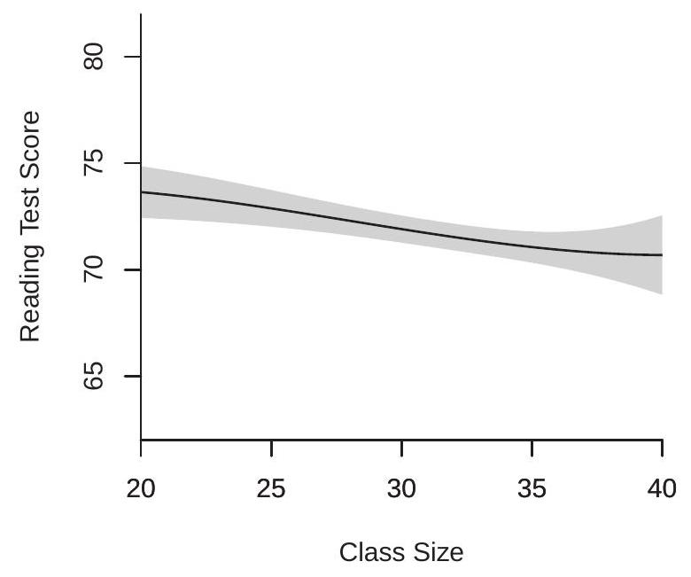
- Effect of Classize
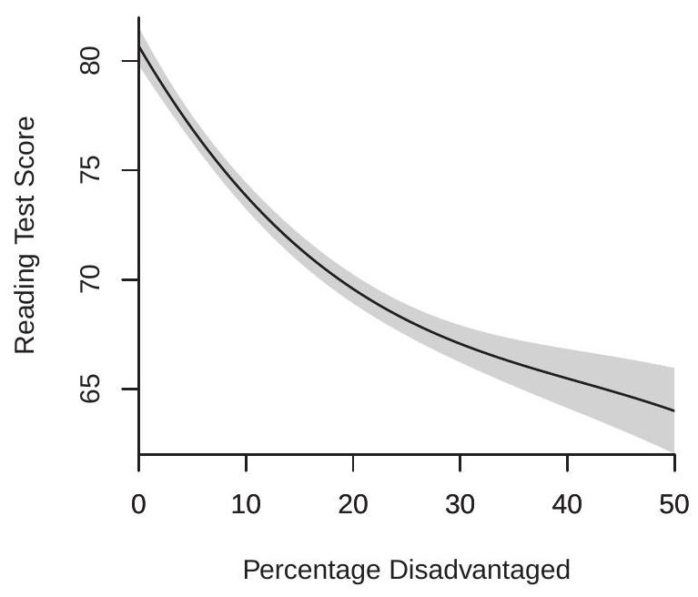
- Effect of Percent Disadvantaged
Figure 20.8: Nonparametric Instrumental Variables Estimates of the Effect of Classize and Disadvantaged on Reading Test Scores
In panel (a) we can see that increasing class size decreases the average test score. This is consistent with the results from the linear model estimated by Angrist and Lavy (1999). The estimated effect is remarkably close to linear.
In panel (b) we can see that increasing the percentage of disadvantaged students greatly decreases the average test score. This effect is substantially greater in magnitude than the effect of classsize. The effect also appears to be nonlinear. The effect is precisely estimated with tight pointwise confidence bands.
We can also use the estimated model for hypothesis testing. The question addressed by Angrist and Lavy was whether or not classsize has an effect on test scores. Within the nonparametric model estimated here this hypothesis holds under the linear restriction \(\mathbb{H}_{0}: \beta_{1}=\beta_{2}=\beta_{3}=\beta_{7}=0\). Examining the individual coefficient estimates and standard errors it is unclear if this is a significant effect as none of these four coefficient estimates is statistically different from zero. This hypothesis is better tested by a Wald test (using cluster-robust variance estimates). This statistic is \(12.7\) which has an asymptotic \(\mathrm{p}\)-value of \(0.013\). This suppports the hypothesis that class size has a negative effect on student performance.
We can also use the model to quantify the impact of class size on test scores. Consider the impact of increasing a class from 20 to 40 students. In the above model the predicted impact on test scores is
\[ \theta=\frac{1}{2} \beta_{1}+\frac{3}{4} \beta_{2}+\frac{7}{8} \beta_{3}+\frac{1}{2} \beta_{4} . \]
This is a linear function of the coefficients. The point estimate is \(\widehat{\theta}=-2.96\) with a standard error of \(1.21\). (The point estimate is identical to the difference between the endpoints of the estimated function shown in panel (a).) This is a small but substantive impact.
19.31 Technical Proofs*
Proof of Theorem 20.4. We provide a proof under the stronger assumption \(\zeta_{K}^{2} K / n \rightarrow 0\). (The proof presented by Belloni, Chernozhukov, Chetverikov, and Kato (2015) requires a more advanced treatment.) Let \(\|\boldsymbol{A}\|_{F}\) denote the Frobenius norm (see Section A.23), and write the \(j^{t h}\) element of \(\widetilde{X}_{K i}\) as \(\widetilde{X}_{j K i}\). Using (A.18),
\[ \left\|\widetilde{\boldsymbol{Q}}_{K}-\boldsymbol{I}_{K}\right\|^{2} \leq\left\|\widetilde{\boldsymbol{Q}}_{K}-\boldsymbol{I}_{K}\right\|_{F}^{2}=\sum_{j=1}^{K} \sum_{\ell=1}^{K}\left(\frac{1}{n} \sum_{i=1}^{n}\left(\widetilde{X}_{j K i} \widetilde{X}_{\ell K i}-\mathbb{E}\left[\widetilde{X}_{j K i} \widetilde{X}_{\ell K i}\right]\right)\right)^{2} . \]
Then
\[ \begin{aligned} \mathbb{E}\left[\left\|\widetilde{\boldsymbol{Q}}_{K}-\boldsymbol{I}_{K}\right\|^{2}\right] & \leq \sum_{j=1}^{K} \sum_{\ell=1}^{K} \operatorname{var}\left[\frac{1}{n} \sum_{i=1}^{n} \widetilde{X}_{j K i} \widetilde{X}_{\ell K i}\right] \\ &=\frac{1}{n} \sum_{j=1}^{K} \sum_{\ell=1}^{K} \operatorname{var}\left[\widetilde{X}_{j K i} \widetilde{X}_{\ell K i}\right] \\ & \leq \frac{1}{n} \mathbb{E}\left[\sum_{j=1}^{K} \widetilde{X}_{j K i}^{2} \sum_{\ell=1}^{K} \widetilde{X}_{\ell K i}^{2}\right] \\ &=\frac{1}{n} \mathbb{E}\left[\left(\widetilde{X}_{K i}^{\prime} \widetilde{X}_{K i}\right)^{2}\right] \\ & \leq \frac{\zeta_{K}^{2}}{n} \mathbb{E}\left[\widetilde{X}_{K i}^{\prime} \widetilde{X}_{K i}\right]=\frac{\zeta_{K}^{2} K}{n} \rightarrow 0 \end{aligned} \]
where final lines use (20.17), \(\mathbb{E}\left[\widetilde{X}_{K i}^{\prime} \widetilde{X}_{K i}\right]=K\), and \(\zeta_{K}^{2} K / n \rightarrow 0\). Markov’s inequality implies (20.19).
Proof of Theorem 20.5. By the spectral decomposition we can write \(\widetilde{\boldsymbol{Q}}_{K}=\boldsymbol{H}^{\prime} \Lambda \boldsymbol{H}\) where \(\boldsymbol{H}^{\prime} \boldsymbol{H}=\boldsymbol{I}_{K}\) and \(\Lambda=\operatorname{diag}\left(\lambda_{1}, \ldots, \lambda_{K}\right)\) are the eigenvalues. Then
\[ \left\|\widetilde{\boldsymbol{Q}}_{K}-\boldsymbol{I}_{K}\right\|=\left\|\boldsymbol{H}^{\prime}\left(\Lambda-\boldsymbol{I}_{K}\right) \boldsymbol{H}\right\|=\left\|\Lambda-\boldsymbol{I}_{K}\right\|=\max _{j \leq K}\left|\lambda_{j}-1\right| \underset{p}{\longrightarrow} 0 \]
by Theorem 20.4. This implies \(\min _{j \leq K}\left|\lambda_{j}\right| \underset{p}{\longrightarrow} 1\) which is (20.21). Similarly
\[ \begin{aligned} \left\|\widetilde{\boldsymbol{Q}}_{K}^{-1}-\boldsymbol{I}_{K}\right\| &=\left\|\boldsymbol{H}^{\prime}\left(\Lambda^{-1}-\boldsymbol{I}_{K}\right) \boldsymbol{H}\right\| \\ &=\left\|\Lambda^{-1}-\boldsymbol{I}_{K}\right\| \\ &=\max _{j \leq K}\left|\lambda_{j}^{-1}-1\right| \\ & \leq \frac{\max _{j \leq K}\left|1-\lambda_{j}\right|}{\min _{j \leq K}\left|\lambda_{j}\right|} \underset{p}{\longrightarrow} 0 . \end{aligned} \]
Proof of Theorem 20.6. Using (20.12) we can write
\[ \widehat{m}_{K}(x)-m(x)=X_{K}(x)^{\prime}\left(\widehat{\beta}_{K}-\beta_{K}\right)-r_{K}(x) . \]
Since \(e_{K}=r_{K}+e\) is a projection error it satisfies \(\mathbb{E}\left[X_{K} e_{K}\right]=0\). Since \(e\) is a regression error it satisfies \(\mathbb{E}\left[X_{K} e\right]=0\). We deduce \(\mathbb{E}\left[X_{K} r_{K}\right]=0\). Hence \(\int X_{K}(x) r_{K}(x) f(x) d x=\mathbb{E}\left[X_{K} r_{K}\right]=0\). Also observe that \(\int X_{K}(x) X_{K}(x)^{\prime} d F(x)=\boldsymbol{Q}_{K}\) and \(\int r_{K}(x)^{2} d F(x)=\mathbb{E}\left[r_{K}^{2}\right]=\delta_{K}^{2}\). Then
\[ \begin{aligned} \operatorname{ISE}(K) &=\int\left(X_{K}(x)^{\prime}\left(\widehat{\beta}_{K}-\beta_{K}\right)-r_{K}(x)\right)^{2} d F(x) \\ &=\left(\widehat{\beta}_{K}-\beta_{K}\right)^{\prime}\left(\int X_{K}(x) X_{K}(x)^{\prime} d F(x)\right)\left(\widehat{\beta}_{K}-\beta_{K}\right) \\ &-2\left(\widehat{\beta}_{K}-\beta_{K}\right)^{\prime}\left(\int X_{K}(x) r_{K}(x) d F(x)\right)+\int r_{K}(x)^{2} d F(x) \\ &=\left(\widehat{\beta}_{K}-\beta_{K}\right)^{\prime} \boldsymbol{Q}_{K}\left(\widehat{\beta}_{K}-\beta_{K}\right)+\delta_{K}^{2} \end{aligned} \]
We calculate that
\[ \begin{aligned} \left(\widehat{\beta}_{K}-\beta_{K}\right)^{\prime} \boldsymbol{Q}_{K}\left(\widehat{\beta}_{K}-\beta_{K}\right) &=\left(\boldsymbol{e}_{K}^{\prime} \boldsymbol{X}_{K}\right)\left(\boldsymbol{X}_{K}^{\prime} \boldsymbol{X}_{K}\right)^{-1} \boldsymbol{Q}_{K}\left(\boldsymbol{X}_{K}^{\prime} \boldsymbol{X}_{K}\right)^{-1}\left(\boldsymbol{X}_{K}^{\prime} \boldsymbol{e}_{K}\right) \\ &=\left(\boldsymbol{e}_{K}^{\prime} \widetilde{\boldsymbol{X}}_{K}\right)\left(\widetilde{\boldsymbol{X}}_{K}^{\prime} \widetilde{\boldsymbol{X}}_{K}\right)^{-1}\left(\widetilde{\boldsymbol{X}}_{K}^{\prime} \widetilde{\boldsymbol{X}}_{K}\right)^{-1}\left(\widetilde{\boldsymbol{X}}_{K}^{\prime} \boldsymbol{e}_{K}\right) \\ &=n^{-2}\left(\boldsymbol{e}_{K}^{\prime} \widetilde{\boldsymbol{X}}_{K}\right) \widetilde{\boldsymbol{Q}}_{K}^{-1} \widetilde{\boldsymbol{Q}}_{K}^{-1}\left(\widetilde{\boldsymbol{X}}_{K}^{\prime} \boldsymbol{e}_{K}\right) \\ & \leq\left(\lambda_{\max }\left(\widetilde{\boldsymbol{Q}}_{K}^{-1}\right)\right)^{2}\left(n^{-2} \boldsymbol{e}_{K}^{\prime} \widetilde{\boldsymbol{X}}_{K} \widetilde{\boldsymbol{X}}_{K}^{\prime} \boldsymbol{e}_{K}\right) \\ & \leq O_{p}(1)\left(n^{-2} \boldsymbol{e}_{K}^{\prime} \boldsymbol{X}_{K} \boldsymbol{Q}_{K}^{-1} \boldsymbol{X}_{K}^{\prime} \boldsymbol{e}_{K}\right) \end{aligned} \]
where \(\widetilde{\boldsymbol{X}}_{K}\) and \(\widetilde{\boldsymbol{Q}}_{K}\) are the orthogonalized regressors as defined in (20.18). The first inequality is the Quadratic Inequality (B.18), the second is (20.21).
Using the fact that \(X_{K} e_{K}\) are mean zero and uncorrelated, (20.17), \(\mathbb{E}\left[e_{K}^{2}\right] \leq \mathbb{E}\left[Y^{2}\right]<\infty\), and Assumption 20.1.2,
\[ \begin{aligned} \mathbb{E}\left[n^{-2} \boldsymbol{e}_{K}^{\prime} \boldsymbol{X}_{K} \boldsymbol{Q}_{K}^{-1} \boldsymbol{X}_{K}^{\prime} \boldsymbol{e}_{K}\right] &=n^{-1} \mathbb{E}\left[X_{K}^{\prime} \boldsymbol{Q}_{K}^{-1} X_{K} e_{K}^{2}\right] \\ & \leq \frac{\zeta_{K}^{2}}{n} \mathbb{E}\left[e_{K}^{2}\right] \leq o(1) . \end{aligned} \]
This shows that (20.45) is \(o_{p}\) (1). Combined with (20.44) we find \(\operatorname{ISE}(K)=o_{p}(1)\) as claimed.
Proof of Theorem 20.7. The assumption \(\sigma^{2}(x) \leq \bar{\sigma}^{2}\) implies that
\[ \mathbb{E}\left[e_{K}^{2} \mid X\right]=\mathbb{E}\left[\left(r_{K}+e\right)^{2} \mid X\right]=r_{K}^{2}+\sigma^{2}(X) \leq r_{K}^{2}+\bar{\sigma}^{2} . \]
Thus \((20.46)\) is bounded by
\[ \begin{aligned} n^{-1} \mathbb{E}\left[X_{K}^{\prime} \boldsymbol{Q}_{K}^{-1} X_{K} r_{K}^{2}\right]+n^{-1} \mathbb{E}\left[X_{K}^{\prime} \boldsymbol{Q}_{K}^{-1} X_{K}\right] \bar{\sigma}^{2} & \leq \frac{\zeta_{K}^{2}}{n} \mathbb{E}\left[r_{K}^{2}\right]+n^{-1} \mathbb{E}\left[\operatorname{tr}\left(\boldsymbol{Q}_{K}^{-1} X_{K} X_{K}^{\prime}\right)\right] \bar{\sigma}^{2} \\ &=\frac{\zeta_{K}^{2}}{n} \delta_{K}^{2}+n^{-1} \operatorname{tr}\left(\boldsymbol{I}_{K}\right) \bar{\sigma}^{2} \\ & \leq o\left(\delta_{K}^{2}\right)+\frac{K}{n} \bar{\sigma}^{2} \end{aligned} \]
where the inequality is Assumption 20.1.2. This implies (20.45) is \(o_{p}\left(\delta_{K}^{2}\right)+O_{p}(K / n)\). Combined with (20.44) we find \(\operatorname{ISE}(K)=O_{p}\left(\delta_{K}^{2}+K / n\right)\) as claimed.
Proof of Theorem 20.8. Using (20.12) and linearity
\[ \theta=a(m)=a\left(Z_{K}(x)^{\prime} \beta_{K}\right)+a\left(r_{K}\right)=a_{K}^{\prime} \beta_{K}+a\left(r_{K}\right) . \]
Thus
\[ \begin{aligned} \sqrt{\frac{n}{V_{K}}}\left(\widehat{\theta}_{K}-\theta+a\left(r_{K}\right)\right) &=\sqrt{\frac{n}{V_{K}}} a_{K}^{\prime}\left(\widehat{\beta}_{K}-\beta_{K}\right) \\ &=\sqrt{\frac{1}{n V_{K}}} a_{K}^{\prime} \widehat{\boldsymbol{Q}}_{K}^{-1} \boldsymbol{X}_{K}^{\prime} \boldsymbol{e}_{K} \\ &=\frac{1}{\sqrt{n V_{K}}} a_{K}^{\prime} \boldsymbol{Q}_{K}^{-1} \boldsymbol{X}_{K}^{\prime} \boldsymbol{e} \\ &+\frac{1}{\sqrt{n V_{K}}} a_{K}^{\prime}\left(\widehat{\boldsymbol{Q}}_{K}^{-1}-\boldsymbol{Q}_{K}^{-1}\right) \boldsymbol{X}_{K}^{\prime} \boldsymbol{e} \\ &+\frac{1}{\sqrt{n V_{K}}} a_{K}^{\prime} \widehat{\boldsymbol{Q}}_{K}^{-1} \boldsymbol{X}_{K}^{\prime} \boldsymbol{r}_{K} \end{aligned} \]
where we have used \(\boldsymbol{e}_{K}=\boldsymbol{e}+\boldsymbol{r}_{K}\). We take the terms in (20.47)-(20.49) separately. We show that (20.47) is asymptotically normal and (20.48)-(20.49) are asymptotically negligible.
First, take (20.47). We can write
\[ \frac{1}{\sqrt{n V_{K}}} a_{K}^{\prime} \boldsymbol{Q}_{K}^{-1} \boldsymbol{X}_{K}^{\prime} \boldsymbol{e}=\frac{1}{\sqrt{n}} \sum_{i=1}^{n} \frac{1}{\sqrt{V_{K}}} a_{K}^{\prime} \boldsymbol{Q}_{K}^{-1} X_{K i} e_{i} . \]
Observe that \(a_{K}^{\prime} \boldsymbol{Q}_{K}^{-1} X_{K i} e_{i} / \sqrt{V_{K}}\) are independent across \(i\), mean zero, and have variance 1 . We will apply Theorem 6.4, for which it is sufficient to verify Lindeberg’s condition: For all \(\epsilon>0\)
\[ \mathbb{E}\left[\frac{\left(a_{K}^{\prime} \boldsymbol{Q}_{K}^{-1} X_{K} e\right)^{2}}{V_{K}} \mathbb{1}\left\{\frac{\left(a_{K}^{\prime} \boldsymbol{Q}_{K}^{-1} X_{K} e\right)^{2}}{V_{K}} \geq n \epsilon\right\}\right] \rightarrow 0 . \]
Pick \(\eta>0\). Set \(B\) sufficiently large so that \(\mathbb{E}\left[e^{2} \mathbb{1}\left\{e^{2}>B\right\} \mid X\right] \leq \underline{\sigma}^{2} \eta\) which is feasible by Assumption 20.2.1. Pick \(n\) sufficiently large so that \(\zeta_{K}^{2} / n \leq \epsilon \underline{\sigma}^{2} / B\), which is feasible under Assumption 20.1.2.
By Assumption 20.2.2
\[ \begin{aligned} V_{K} &=\mathbb{E}\left[\left(a_{K}^{\prime} \boldsymbol{Q}_{K}^{-1} X_{K}\right)^{2} e^{2}\right] \\ &=\mathbb{E}\left[\left(a_{K}^{\prime} \boldsymbol{Q}_{K}^{-1} X_{K}\right)^{2} \sigma\left(X^{2}\right)\right] \\ & \geq \mathbb{E}\left[\left(a_{K}^{\prime} \boldsymbol{Q}_{K}^{-1} X_{K}\right)^{2} \underline{\sigma}^{2}\right] \\ &=a_{K}^{\prime} \boldsymbol{Q}_{K}^{-1} \mathbb{E}\left[X_{K} X_{K}^{\prime}\right] \boldsymbol{Q}_{K}^{-1} a_{K} \underline{\sigma}^{2} \\ &=a_{K}^{\prime} \boldsymbol{Q}_{K}^{-1} a_{K} \underline{\sigma}^{2} . \end{aligned} \]
Then by the Schwarz Inequality, (20.17), (20.52), and \(\zeta_{K}^{2} / n \leq \epsilon \underline{\sigma}^{2} / B\)
\[ \frac{\left(a_{K}^{\prime} \boldsymbol{Q}_{K}^{-1} X_{K}\right)^{2}}{V_{K}} \leq \frac{\left(a_{K}^{\prime} \boldsymbol{Q}_{K}^{-1} a_{K}\right)\left(X_{K}^{\prime} \boldsymbol{Q}_{K}^{-1} X_{K}\right)}{V_{K}} \leq \frac{\zeta_{K}^{2}}{\underline{\sigma}^{2}} \leq \frac{\epsilon}{B} n . \]
Then the left-side of (20.51) is smaller than
\[ \begin{aligned} \mathbb{E}\left[\frac{\left(a_{K}^{\prime} \boldsymbol{Q}_{K}^{-1} X_{K}\right)^{2}}{V_{K}} e^{2} \mathbb{1}\left\{e^{2} \geq B\right\}\right] &=\mathbb{E}\left[\frac{\left(a_{K}^{\prime} \boldsymbol{Q}_{K}^{-1} X_{K}\right)^{2}}{V_{K}} \mathbb{E}\left[e^{2} \mathbb{1}\left\{e^{2} \geq B\right\} \mid X\right]\right] \\ & \leq \mathbb{E}\left[\frac{\left(a_{K}^{\prime} \boldsymbol{Q}_{K}^{-1} X_{K}\right)^{2}}{V_{K}}\right] \underline{\sigma}^{2} \eta \\ & \leq \frac{a_{K}^{\prime} \boldsymbol{Q}_{K}^{-1} a_{K}}{V_{K}} \underline{\sigma}^{2} \eta \leq \eta \end{aligned} \]
the final inequality by (20.52). Since \(\eta\) is arbitrary this verifies (20.51) and we conclude
\[ \frac{1}{\sqrt{n V_{K}}} a_{K}^{\prime} \boldsymbol{Q}_{K}^{-1} \boldsymbol{X}_{K}^{\prime} \boldsymbol{e} \underset{d}{\longrightarrow} \mathrm{N}(0,1) \text {. } \]
Second, take (20.48). Assumption \(20.2\) implies \(\mathbb{E}\left[e^{2} \mid X\right] \leq \bar{\sigma}^{2}<\infty\). Since \(\mathbb{E}[\boldsymbol{e} \mid \boldsymbol{X}]=0\), applying \(\mathbb{E}\left[e^{2} \mid X\right] \leq \bar{\sigma}^{2}\), the Schwarz and Norm Inequalities, (20.52), and Theorems \(20.4\) and \(20.5\),
\[ \begin{aligned} &\mathbb{E}\left[\left(\frac{1}{\sqrt{n V_{K}}} a_{K}^{\prime}\left(\widehat{\boldsymbol{Q}}_{K}^{-1}-\boldsymbol{Q}_{K}^{-1}\right) \boldsymbol{X}_{K}^{\prime} \boldsymbol{e}\right)^{2} \mid \boldsymbol{X}\right] \\ &=\frac{1}{n V_{K}} a_{K}^{\prime}\left(\widehat{\boldsymbol{Q}}_{K}^{-1}-\boldsymbol{Q}_{K}^{-1}\right) \boldsymbol{X}_{K}^{\prime} \mathbb{E}\left[\boldsymbol{e} \boldsymbol{e}^{\prime} \mid \boldsymbol{X}\right] \boldsymbol{X}_{K}\left(\widehat{\boldsymbol{Q}}_{K}^{-1}-\boldsymbol{Q}_{K}^{-1}\right) a_{K} \\ &\leq \frac{\bar{\sigma}^{2}}{V_{K}} a_{K}^{\prime}\left(\widehat{\boldsymbol{Q}}_{K}^{-1}-\boldsymbol{Q}_{K}^{-1}\right) \widehat{\boldsymbol{Q}}_{K}\left(\widehat{\boldsymbol{Q}}_{K}^{-1}-\boldsymbol{Q}_{K}^{-1}\right) a_{K} \\ &\leq \frac{\bar{\sigma}^{2} a_{K}^{\prime} \boldsymbol{Q}_{K}^{-1} a_{K}}{V_{K}}\left\|\left(\widehat{\boldsymbol{Q}}_{K}^{-1}-\boldsymbol{Q}_{K}^{-1}\right) \widehat{\boldsymbol{Q}}_{K}\left(\widehat{\boldsymbol{Q}}_{K}^{-1}-\boldsymbol{Q}_{K}^{-1}\right)\right\| \\ &=\frac{\bar{\sigma}^{2} a_{K}^{\prime} \boldsymbol{Q}_{K}^{-1} a_{K}}{V_{K}}\left\|\left(\boldsymbol{I}_{K}-\widetilde{\boldsymbol{Q}}_{K}\right)\left(\widetilde{\boldsymbol{Q}}_{K}^{-1}-\boldsymbol{I}_{K}\right)\right\| \\ &\leq \frac{\bar{\sigma}^{2}}{\underline{\sigma}^{2}}\left\|\boldsymbol{I}_{K}-\widetilde{\boldsymbol{Q}}_{K}\right\|\left\|\widetilde{\boldsymbol{Q}}_{K}^{-1}-\boldsymbol{I}_{K}\right\| \\ &\leq \frac{\bar{\sigma}^{2}}{\underline{\sigma}^{2}} o_{p}(1) . \end{aligned} \]
This establishes that (20.48) is \(o_{p}(1)\).
Third, take (20.49). By the Cauchy-Schwarz inequality, the Quadratic Inequality, (20.52), and (20.21),
\[ \begin{aligned} \left(\frac{1}{\sqrt{n v_{K}}} a_{K}^{\prime} \widehat{\boldsymbol{Q}}_{K}^{-1} \boldsymbol{X}_{K}^{\prime} \boldsymbol{r}_{K}\right)^{2} & \leq \frac{a_{K}^{\prime} \boldsymbol{Q}_{K}^{-1} a_{K}}{n v_{K}} \boldsymbol{r}_{K}^{\prime} \boldsymbol{X}_{K} \widehat{\boldsymbol{Q}}_{K}^{-1} \boldsymbol{Q}_{K} \widehat{\boldsymbol{Q}}_{K}^{-1} \boldsymbol{X}_{K}^{\prime} \boldsymbol{r}_{K} \\ & \leq \frac{1}{\underline{\sigma}^{2}}\left(\lambda_{\max } \widetilde{\boldsymbol{Q}}_{K}^{-1}\right)^{2} \frac{1}{n} \boldsymbol{r}_{K}^{\prime} \boldsymbol{X}_{K} \boldsymbol{Q}_{K}^{-1} \boldsymbol{X}_{K}^{\prime} \boldsymbol{r}_{K} \\ & \leq O_{p}(1) \frac{1}{n} \boldsymbol{r}_{K}^{\prime} \boldsymbol{X}_{K} \boldsymbol{Q}_{K}^{-1} \boldsymbol{X}_{K}^{\prime} \boldsymbol{r}_{K} . \end{aligned} \]
Observe that because the observations are independent, \(\mathbb{E}\left[X_{K} r_{K}\right]=0, X_{K i}^{\prime} \boldsymbol{Q}_{K}^{-1} X_{K i} \leq \zeta_{K}^{2}\), and \(\mathbb{E}\left[r_{K}^{2}\right]=\delta_{K}^{2}\),
\[ \begin{aligned} \mathbb{E}\left[\frac{1}{n} \boldsymbol{r}_{K}^{\prime} \boldsymbol{X}_{K} \boldsymbol{Q}_{K}^{-1} \boldsymbol{X}_{K}^{\prime} \boldsymbol{r}_{K}\right] &=\mathbb{E}\left[\frac{1}{n} \sum_{i=1}^{n} r_{K i} X_{K i}^{\prime} \boldsymbol{Q}_{K}^{-1} \sum_{i j=1}^{n} X_{K j} r_{K j}\right] \\ &=\mathbb{E}\left[X_{K}^{\prime} \boldsymbol{Q}_{K}^{-1} X_{K} r_{K}^{2}\right] \\ & \leq \zeta_{K}^{2} \mathbb{E}\left[r_{K}^{2}\right]=\zeta_{K}^{2} \delta_{K}^{2}=o(1) \end{aligned} \]
under Assumption 20.2.3. Thus \(\frac{1}{n} \boldsymbol{r}_{K}^{\prime} \boldsymbol{X}_{K} \boldsymbol{Q}_{K}^{-1} \boldsymbol{X}_{K}^{\prime} \boldsymbol{r}_{K}=o_{p}(1)\), (20.54) is \(o_{p}(1)\), and (20.49) is \(o_{p}(1)\).
Together, we have shown that
\[ \sqrt{\frac{n}{V_{K}}}\left(\widehat{\theta}_{K}-\theta_{K}+a\left(r_{K}\right)\right) \underset{d}{\longrightarrow} \mathrm{N}(0,1) \]
as claimed. Proof of Theorem 20.10. It is sufficient to show that
\[ \frac{\sqrt{n}}{V_{K}^{1 / 2}(x)} r_{K}(x)=o(1) \text {. } \]
Notice that by Assumption \(20.2 .2\)
\[ \begin{aligned} V_{K}(x) &=X_{K}(x)^{\prime} \boldsymbol{Q}_{K}^{-1} \boldsymbol{\Omega}_{K} \boldsymbol{Q}_{K}^{-1} X_{K}(x) \\ &=\mathbb{E}\left[\left(X_{K}(x)^{\prime} \boldsymbol{Q}_{K}^{-1} X_{K}\right)^{2} e^{2}\right] \\ &=\mathbb{E}\left[\left(X_{K}(x)^{\prime} \boldsymbol{Q}_{K}^{-1} X_{K}\right)^{2} \sigma^{2}(X)\right] \\ & \geq \mathbb{E}\left[\left(X_{K}(x)^{\prime} \boldsymbol{Q}_{K}^{-1} X_{K}\right)^{2}\right] \underline{\sigma}^{2} \\ &=X_{K}(x)^{\prime} \boldsymbol{Q}_{K}^{-1} \mathbb{E}\left[X_{K} X_{K}^{\prime}\right] \boldsymbol{Q}_{K}^{-1} X_{K}(x) \underline{\sigma}^{2} \\ &=X_{K}(x)^{\prime} \boldsymbol{Q}_{K}^{-1} X_{K}(x) \underline{\sigma}^{2} \\ &=\zeta_{K}(x)^{2} \underline{\sigma}^{2} . \end{aligned} \]
Using the definitions for \(\beta_{K}^{*}, r_{K}^{*}(x)\), and \(\delta_{K}^{*}\) from Section 20.8, note that
\[ r_{K}(x)=m(x)-X_{K}^{\prime}(x) \beta_{K}=r_{K}^{*}(x)+X_{K}^{\prime}(x)\left(\beta_{K}^{*}-\beta_{K}\right) . \]
By the Triangle Inequality, the definition (20.10), the Schwarz Inequality, and definition (20.15)
\[ \begin{aligned} \left|r_{K}(x)\right| & \leq\left|r_{K}^{*}(x)\right|+\left|X_{K}^{\prime}(x)\left(\beta_{K}^{*}-\beta_{K}\right)\right| \\ & \leq \delta_{K}^{*}+\left|X_{K}^{\prime}(x) \boldsymbol{Q}_{K}^{-1} X_{K}^{\prime}(x)\right|^{1 / 2}\left|\left(\beta_{K}^{*}-\beta_{K}\right)^{\prime} \boldsymbol{Q}_{K}\left(\beta_{K}^{*}-\beta_{K}\right)\right|^{1 / 2} \\ &=\delta_{K}^{*}+\zeta_{K}(x)\left|\left(\beta_{K}^{*}-\beta_{K}\right)^{\prime} \boldsymbol{Q}_{K}\left(\beta_{K}^{*}-\beta_{K}\right)\right|^{1 / 2} . \end{aligned} \]
The coefficients satisfy the relationship
\[ \beta_{K}=\mathbb{E}\left[X_{K} X_{K}^{\prime}\right]^{-1} \mathbb{E}\left[X_{K} m(X)\right]=\beta_{K}^{*}+\mathbb{E}\left[X_{K} X_{K}^{\prime}\right]^{-1} \mathbb{E}\left[X_{K} r_{K}^{*}\right] . \]
Thus
\[ \left(\beta_{K}^{*}-\beta_{K}\right)^{\prime} \boldsymbol{Q}_{K}\left(\beta_{K}^{*}-\beta_{K}\right)=\mathbb{E}\left[r_{K}^{*} X_{K}^{\prime}\right] \mathbb{E}\left[X_{K} X_{K}^{\prime}\right]^{-1} \mathbb{E}\left[X_{K} r_{K}^{*}\right] \leq \mathbb{E}\left[r_{K}^{2 *}\right] \leq \delta_{K}^{* 2} . \]
The first inequality is because \(\mathbb{E}\left[r_{K}^{*} X_{K}^{\prime}\right] \mathbb{E}\left[X_{K} X_{K}^{\prime}\right]^{-1} \mathbb{E}\left[X_{K} r_{K}^{*}\right]\) is a projection. The second inequality follows from the definition (20.10). We deduce that
\[ \left|r_{K}(x)\right| \leq\left(1+\zeta_{K}(x)\right) \delta_{K}^{*} \leq 2 \zeta_{K}(x) \delta_{K}^{*} . \]
Equations (20.56), (20.57), and \(n \delta_{K}^{* 2}=o(1)\) together imply that
\[ \frac{n}{V_{K}(x)} r_{K}^{2}(x) \leq \frac{4}{\underline{\sigma}^{2}} n \delta_{K}^{* 2}=o(1) \]
which is (20.55), as required.
19.32 Exercises
Exercise 20.1 Take the estimated model
\[ Y=-1+2 X+5(X-1) \mathbb{1}\{X \geq 1\}-3(X-2) \mathbb{1}\{X \geq 2\}+e . \]
What is the estimated marginal effect of \(X\) on \(Y\) for \(X=3\) ?
Exercise 20.2 Take the linear spline with three knots
\[ m_{K}(x)=\beta_{0}+\beta_{1} x+\beta_{2}\left(x-\tau_{1}\right) \mathbb{1}\left\{x \geq \tau_{1}\right\}+\beta_{3}\left(x-\tau_{2}\right) \mathbb{1}\left\{x \geq \tau_{2}\right\}+\beta_{4}\left(x-\tau_{3}\right) \mathbb{1}\left\{x \geq \tau_{3}\right\} . \]
Find the inequality restrictions on the coefficients \(\beta_{j}\) so that \(m_{K}(x)\) is non-decreasing.
Exercise 20.3 Take the linear spline from the previous question. Find the inequality restrictions on the coefficients \(\beta_{j}\) so that \(m_{K}(x)\) is concave.
Exercise 20.4 Take the quadratic spline with three knots
\[ m_{K}(x)=\beta_{0}+\beta_{1} x+\beta_{2} x^{3}+\beta_{3}\left(x-\tau_{1}\right)^{2} \mathbb{1}\left\{x \geq \tau_{1}\right\}+\beta_{4}\left(x-\tau_{2}\right)^{2} \mathbb{1}\left\{x \geq \tau_{2}\right\}+\beta_{5}\left(x-\tau_{3}\right)^{2} \mathbb{1}\left\{x \geq \tau_{3}\right\} . \]
Find the inequality restrictions on the coefficients \(\beta_{j}\) so that \(m_{K}(x)\) is concave.
Exercise 20.5 Consider spline estimation with one knot \(\tau\). Explain why the knot \(\tau\) must be within the sample support of \(X\). [Explain what happens if you estimate the regression with the knot placed outside the support of \(X]\)
Exercise 20.6 You estimate the polynomial regression model:
\[ \widehat{m}_{K}(x)=\widehat{\beta}_{0}+\widehat{\beta}_{1} x+\widehat{\beta}_{2} x^{2}+\cdots+\widehat{\beta}_{p} x^{p} . \]
You are interested in the regression derivative \(m^{\prime}(x)\) at \(x\).
Write out the estimator \(\widehat{m}_{K}^{\prime}(x)\) of \(m^{\prime}(x)\).
Is \(\widehat{m}_{K}^{\prime}(x)\) is a linear function of the coefficient estimates?
Use Theorem \(20.8\) to obtain the asymptotic distribution of \(\widehat{m}_{K}^{\prime}(x)\).
Show how to construct standard errors and confidence intervals for \(\widehat{m}_{K}^{\prime}(x)\).
Exercise 20.7 Does rescaling \(Y\) or \(X\) (multiplying by a constant) affect the \(\mathrm{CV}(K)\) function? The \(K\) which minimizes it?
Exercise 20.8 Take the NPIV approximating equation (20.35) and error \(e_{K}\).
Does it satisfy \(\mathbb{E}\left[e_{K} \mid Z\right]=0\) ?
If \(L=K\) can you define \(\beta_{K}\) so that \(\mathbb{E}\left[Z_{K} e_{K}\right]=0\) ?
If \(L>K\) does \(\mathbb{E}\left[Z_{K} e_{K}\right]=0\) ?
Exercise 20.9 Take the cps09mar dataset (full sample). (a) Estimate a \(6^{\text {th }}\) order polynomial regression of \(\log (\) wage \()\) on experience. To reduce the ill-conditioned problem first rescale experience to lie in the interval \([0,1]\) before estimating the regression.
Plot the estimated regression function along with 95% pointwise confidence intervals.
Interpret the findings. How do you interpret the estimated function for experience levels above 65 ?
Exercise 20.10 Continuing the previous exercise, compute the cross-validation function (or alternatively the AIC) for polynomial orders 1 through 8.
Which order minimizes the function?
Plot the estimated regression function along with \(95 %\) pointwise confidence intervals.
Exercise 20.11 Take the cps09mar dataset (full sample).
Estimate a \(6^{\text {th }}\) order polynomial regression of \(\log (\) wage \()\) on education. To reduce the ill-conditioned problem first rescale education to lie in the interval \([0,1]\).
Plot the estimated regression function along with \(95 %\) pointwise confidence intervals.
Exercise 20.12 Continuing the previous exercise, compute the cross-validation function (or alternatively the AIC) for polynomial orders 1 through 8.
Which order minimizes the function?
Plot the estimated regression function along with \(95 %\) pointwise confidence intervals.
Exercise 20.13 Take the \(\mathrm{cps} 09 \mathrm{mar}\) dataset (full sample).
Estimate quadratic spline regressions of \(\log (\) wage \()\) on experience. Estimate four models: (1) no knots (a quadratic); (2) one knot at 20 years; (3) two knots at 20 and 40; (4) four knots at 10, 20, 30, \(\& 40\). Plot the four estimates. Intrepret your findings.
Compare the four splines models using either cross-validation or AIC. Which is the preferred specification?
For your selected specification plot the estimated regression function along with 95% pointwise confidence intervals. Intrepret your findings.
If you also estimated a polynomial specification do you prefer the polynomial or the quadratic spline estimates?
Exercise 20.14 Take the cps09mar dataset (full sample).
Estimate quadratic spline regressions of \(\log (\) wage \()\) on education. Estimate four models: (1) no knots (a quadratic); (2) one knot at 10 years; (3) three knots at 5,10 , and 15 ; (4) four knots at 4,8 , 12, & 16. Plot the four estimates. Intrepret your findings.
Compare the four splines models using either cross-validation or AIC. Which is the preferred specification?
For your selected specification plot the estimated regression function along with 95% pointwise confidence intervals. Intrepret your findings. (d) If you also estimated a polynomial specification do you prefer the polynomial or the quadratic spline estimates?
Exercise 20.15 The RR2010 dataset is from Reinhart and Rogoff (2010). It contains observations on annual U.S. GDP growth rates, inflation rates, and the debt/gdp ratio for the long time span 1791-2009. The paper made the strong claim that GDP growth slows as debt/gdp increases, and in particular that this relationship is nonlinear with debt negatively affecting growth for debt ratios exceeding \(90 %\). Their full dataset includes 44 countries, our extract only includes the United States. Let \(Y_{t}\) denote GDP growth and let \(D_{t}\) denote debt/gdp. We will estimate the partially linear specification
\[ Y_{t}=\alpha Y_{t-1}+m\left(D_{t-1}\right)+e_{t} \]
using a linear spline for \(m(D)\).
Estimate (1) linear model; (2) linear spline with one knot at \(D_{t-1}=60\); (3) linear spline with two knots at 40 and 80 . Plot the three estimates.
For the model with one knot plot with \(95 %\) confidence intervals.
Compare the three splines models using either cross-validation or AIC. Which is the preferred specification?
Interpret the findings.
Exercise 20.16 Take the DDK2011 dataset (full sample). Use a quadratic spline to estimate the regression of testscore on percentile.
Estimate five models: (1) no knots (a quadratic); (2) one knot at 50; (3) two knots at 33 and 66; (4) three knots at 25,50 & 75 ; (5) knots at 20, 40, 60, & 80. Plot the five estimates. Intrepret your findings.
Select a model. Consider using leave-cluster-one CV.
For your selected specification plot the estimated regression function along with 95% pointwise confidence intervals. [Use cluster-robust standard errors.] Intrepret your findings.
Exercise 20.17 The CH J2004 dataset is from Cox, Hansen and Jimenez (2004). As described in Section \(20.6\) it contains a sample of 8684 urban Phillipino households. This paper studied the crowding-out impact of a family’s income on non-governmental transfers. Estimate an analog of Figure 20.2(b) using polynomial regression. Regress transfers on a high-order polynomial in income, and possibly a set of regression controls. Ideally, select the polynomial order by cross-validation. You will need to rescale the variable income before taking polynomial powers. Plot the estimated function along with \(95 %\) pointwise confidence intervals. Comment on the similarities and differences with Figure 20.2(b). For the regression controls consider the following options: (a) Include no additional controls; (b) Follow the original paper and Figure 20.2(b) by including the variables 12-26 listed in the data description file; (c) Make a different selection, possibly based on cross-validation.
Exercise 20.18 The AL1999 dataset is from Angrist and Lavy (1999). It contains 4067 observations on classroom test scores and explanatory variables including those described in Section 20.30. In Section \(20.30\) we report a nonparametric instrumental variables regression of reading test scores (avgverb) on classize, disadvantaged, enrollment, and a dummy for grade=4, using the Angrist-Levy variable (20.42) as an instrument. Repeat the analysis but instead of reading test scores use math test scores (avgmath) as the dependent variable. Comment on the similarities and differences with the results for reading test scores.